本模块所有 stage 评级、TVL、协议参数均标注「截至 2026-04」。L2 生态变化极快，正式生产部署前请用 L2BEAT 与各协议官方 docs 复核。
学习目标：理解 L2 必要性、Optimistic/ZK 机制差异、EIP-4844/Pectra/Fusaka 技术细节、DA 层设计、桥安全分析与 L2BEAT Stage 评级体系，能为具体应用给出有数字依据的 L2 选型建议。
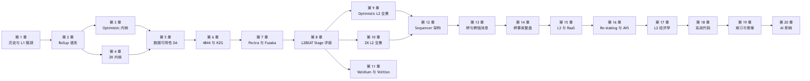
2021-09 主网一笔 Uniswap swap gas $84；2026 年繁忙时段仍 $5–$30。模块 06 里 AMM、借贷、衍生品对高频低费的需求在 2021 把 L1 gas 推到三位数——L2 不是「锦上添花」，是 L1 物理上压不下来成本之后的唯一出路。
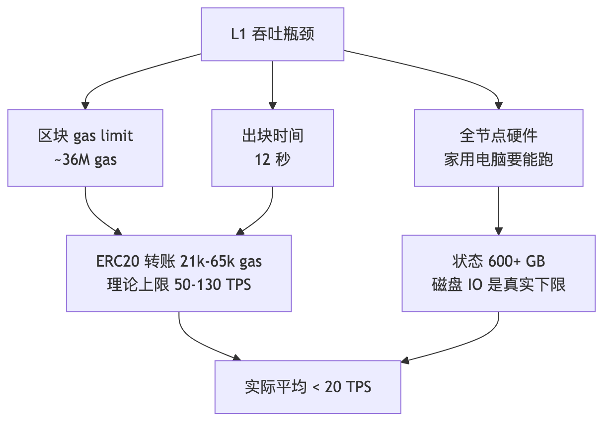
「家用电脑能跑全节点」是硬约束，L1 永远不走大区块路线。Vitalik 在《rollup-centric ethereum roadmap》(2020) 与《Endgame》(2021) 把扩容外包给 L2，L1 只做 DA + 结算 + 共识。
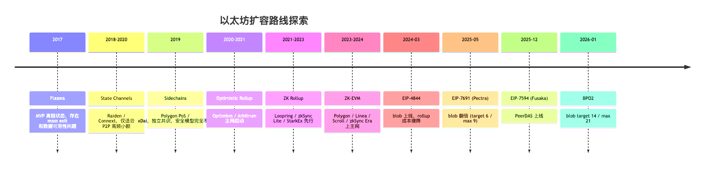
Plasma 思想活在 fraud proof 与 Validium 里，但作为完整方案 2020 年后已被 Rollup 取代。
L2 fee = L2 execution gas + (L1 DA cost / batch size) + (proof cost / batch size)
↓ ↓ ↓
sequencer 在 L2 上 分摊到每笔的 （仅 ZK 系，
跑你的合约消耗的 gas L1 数据成本 分摊证明生成成本）
各项占比随时间变化：
| 时期 | execution | L1 DA | proof | 用户感知费用 |
|---|---|---|---|---|
| 4844 之前（2024-03 前） | 5–10% | 80–90%（calldata） | 0/5% | $0.5–$3 |
| 4844 之后（2024-03 至 2025-05） | 30–50% | 30–50%（blob） | 0–10% | $0.05–$0.30 |
| Pectra 后（2025-05） | 50–70% | 10–20%（blob target 6） | 0–10% | $0.01–$0.10 |
| Fusaka + BPO2 后（2026-01 起） | 60–80% | <10%（blob target 14，单 blob 价 ≈ 1 wei） | 5–15%（ZK 系） | $0.005–$0.05 |
这张表的关键转折点：blob 价格 2024 年起进入接近零的稳定区间，rollup 成本中心从 DA 整体转向 execution 与 prover——这一现象的机制由第 6/7 章拆解，本章只需记住「DA 不再是瓶颈」。
| 项目 | 数值 |
|---|---|
| L1 区块 gas limit | 约 36M（Pectra 后） |
| L1 出块时间 | 12 秒 |
| Blob target / max（BPO2，2026-01-07 起） | 14 / 21 |
| 单 blob 大小 | 128 KiB（4096 个 BLS12-381 标量） |
| Blob 在共识层保留期 | 约 18 天 |
| 主网平均 blob 利用率（2026-04） | ~28k blobs/天，~4 blobs/block，仍低于 14 target |
| blob_base_fee | 长期接近 1 wei（即「免费」） |
| L2 总 TVS（L2BEAT） | 约 $40B+，Arbitrum + Base 占 75%+ |
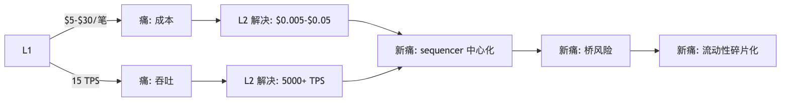
注意：L2 不是免费午餐，用 sequencer 中心化、桥风险、流动性碎片换来了吞吐和低费用。
这一章是后续所有章节引用的「Optimistic vs ZK 对照」单一权威源。第 3、4、9、10、17 章只引用本章 2.3 的对比表，不再重复。
Rollup = 执行在 L2，数据 + 结算在 L1。L1 上的验证逻辑不同把 rollup 分成两大派别。
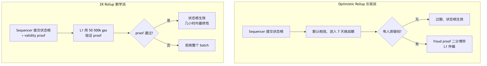
| 维度 | Optimistic | ZK |
|---|---|---|
| 提款延迟（最终性） | 7 天（挑战期） | 几小时（proof 上链后即终局） |
| Prover 成本 | 0（只在挑战时生成） | 每 batch 都要生成，硬件密集 |
| EVM 等价性 | 几乎完美（Type-1 等价） | Type-1 到 Type-4 不等 |
| 安全模型 | 1-of-N 诚实挑战者假设 | 数学（电路 + 可信设置/STARK） |
| L1 验证 gas | 低（提交状态根 + 偶尔挑战） | 中（每次 verify proof 50–500k gas） |
| 适合的应用 | 通用、DeFi、链游 | 高频结算、隐私、跨链桥 |
| 代表 | Arbitrum / Optimism / Base / Blast / Mantle | zkSync Era / Scroll / Linea / Starknet / Taiko |
常见误解：「ZK 比 Optimistic 安全」。两者安全前提不同：Optimistic 假设「至少 1 个诚实挑战者 + L1 抗审查」；ZK 假设「证明系统数学正确 + 可信设置（如有）安全 + 电路无 bug」。历史上 ZK 出过电路 under-constrained bug 和 verifier 合约升级权失控；Optimistic 事故主要是 sequencer 审查或 multisig 风险。两者都不是绝对安全。
| 维度 | Rollup | Sidechain |
|---|---|---|
| 安全继承 | 继承 L1 | 自有共识 |
| 数据可用性 | L1 / 外部 DA + 证据 | 自己保证 |
| 提款 | trust-minimized | 依赖侧链共识/桥 |
| 例子 | Arbitrum / Optimism / Scroll | Polygon PoS / Gnosis Chain / BNB Chain |
注意：Polygon PoS 不是 L2——它是一条独立 PoS 侧链，安全等价于 100 个 validator 的 PoS 共识，不继承以太坊安全。L2BEAT 不把它列在 L2 里。
Vitalik 长期立场「最终愿景是 ZK Rollup」；但 Optimistic 先成熟（2020-2021），ZK 后追（2023-2024）。两派核心差异 = 争议解决时点：Optimistic 事后挑战，ZK 事前证明。
本章只解决一个问题：怎么在 L1 上以可承受成本仲裁一笔错误的 L2 状态根。
直接在 L1 重放整个 batch 成本不可接受，解法是二分博弈（bisection game）：
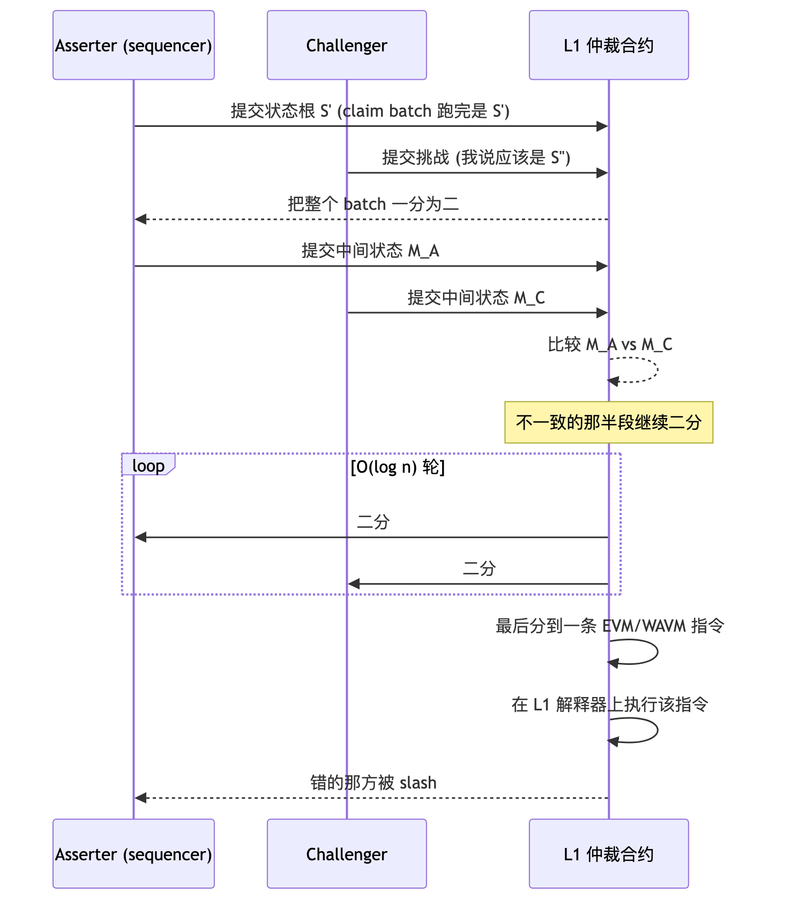
复杂度：N 笔交易二分到一条指令需 O(log N) 轮，每轮在 L1 写一个 hash。不需要重放整个 batch，只需仲裁一条指令——这使 fraud proof 在 L1 上经济可行。
| 实现 | 项目 | 特点 |
|---|---|---|
| 单轮（non-interactive） | Cannon (OP)、ZK fault proof | 把整个 fault proof 用 ZK 一次证明 |
| 多轮（interactive） | Arbitrum Classic | 二分到一条指令，L1 仲裁 |
| 多轮 + permissionless | Arbitrum BoLD | 任何挑战者，bounded delay |
BoLD（Bounded Liquidity Delay） 2025 年上 Arbitrum One 主网：
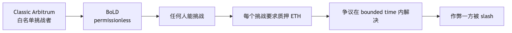
BoLD 是 Arbitrum 达到 Stage 1 的关键：当前最成熟的 permissionless fraud proof 实现，Arbitrum 因此成为最早达 Stage 1 的 EVM L2 之一。
Cannon 是 OP Stack fault proof 实现：Geth 编译成 MIPS 指令，L1 部署 MIPS 解释器合约，二分博弈最终仲裁一条 MIPS 指令。选 MIPS 而非 EVM 是因为 OP Stack 用 Geth 原版（Go），编 MIPS 比编 EVM 简单。
2024-06 OP 主网启用 permissionless fault proof，2024-10 Base 跟进（每提案 0.08 ETH 抵押）。
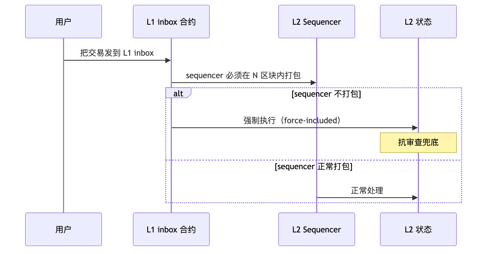
force-inclusion 是 Stage 1 硬要求。区分两个数字：L2BEAT Stage 1 协议级要求 force-inclusion 延迟上限 ≤ 7 天（与挑战期对齐，保证 sequencer 审查最坏情况下用户仍能在 7 天内强制提款）；Arbitrum / OP / Base 实际配置延迟选 12 小时（截至 2026-04），显著优于协议下限。
三个考虑：1) watcher 发现错误状态根；2) 挑战交易在 L1 被打包（即使主网被攻击）；3) 社会层应对极端情况。代价是用户提款等 7 天——这正是 Across 等即时桥（流动性提供商垫付资金赚垫资成本）的市场原因。
Optimistic 用「可能发生的挑战」约束 sequencer；ZK 用「每次提交附数学证明」彻底消除争议窗口。本章只关心 rollup 层取舍——电路与曲线的密码学原理在模块 08 展开。
Rollup 场景里零知识不是必需的——只需 succinctness（证明短，验证快）。zkRollup 严格说叫「validity rollup」更准确，但行业沿用了 zk 这个名字。
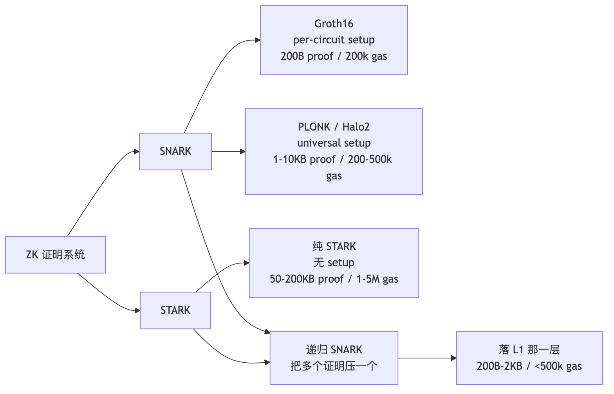
| 系统 | 类型 | 可信设置 | proof 大小 | verify 成本 | 代表 |
|---|---|---|---|---|---|
| Groth16 | SNARK | per-circuit | 200B | ~200k gas | 早期 zkSync Lite |
| PLONK / Halo2 | SNARK | universal / none | 1–10 KB | 200–500k gas | Aztec、ZK 应用层 |
| STARK | STARK | none | 50–200 KB | 1–5M gas | Starknet、zkSync Boojum 内层 |
| 递归 SNARK | SNARK | universal | 200B–2KB | 200–500k gas | 几乎所有现代 zkEVM 落 L1 |
使用 ZK 系统前务必确认：是 per-circuit 还是 universal 可信设置？仪式有多少参与者？是否公开 transcript？
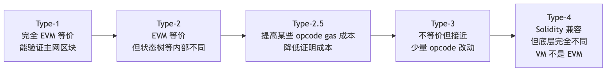
实例：Type-2 Scroll、Linea（Linea 的 Type-1 audit 进行中、尚未正式上线，参见 Linea changelog）；Type-4 zkSync Era（EraVM）、Starknet（Cairo VM）。
选型参考：复用主网工具链 → Type-2（Scroll、Linea）；最高 prover 性能 → Type-4（zkSync Era）或非 EVM（Starknet）。
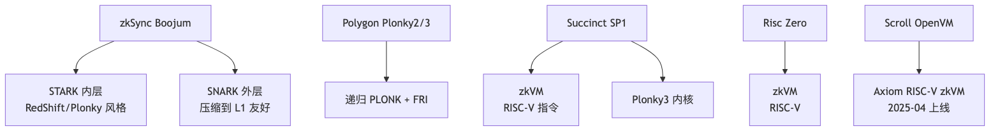
趋势：zkVM 取代 zkEVM 直接证明——EVM 编译成 RISC-V，通用 zkVM 证明 RISC-V 指令，证明系统可复用。Scroll Euclid 升级（2025-04）走此路线。
| 平台 | 单 batch 证明时间 | 典型硬件 |
|---|---|---|
| zkSync Era（Boojum） | 5–15 分钟 | A100 / H100 集群 |
| Scroll（OpenVM） | 3–10 分钟 | H100 / B200 集群 |
| Polygon zkEVM（Plonky2） | 8–20 分钟 | A100 集群 |
| Linea（Vortex） | 5–12 分钟 | GPU 集群 |
| Starknet（Stone） | 10–30 分钟 | CPU 集群 |
| Aligned Layer / Lagrange（AVS） | 几分钟（外包） | restaked GPU |
新生硬件：Cysic（FPGA，Scroll 集成）、Ingonyama（ICICLE GPU + ASIC）、Ulvetanna（Binius ASIC）、Fabric Cryptography（通用 ZK ASIC，2026 出货）。
ZK 系统三大风险：1) 电路 bug（under-constrained）——最常见，导致伪造证明被接受，Vitalik 反复警告这是 zkEVM 最大风险点；2) 可信设置泄漏（仅 Groth16/PLONK）——仪式参与者越多越接近不可能；3) prover liveness——所有 sequencer 共用一个 prover 集群，prover 故障 = 链停，Aligned Layer / Lagrange 这类 prover-as-AVS 是部分缓解。
不管 Optimistic 还是 ZK，安全底线只有一句话：原始交易数据必须可被任何人下载。本章拆解这句话的工程含义。
DA 问题：sequencer 公布状态根但藏起原始数据——没人能重构 L2 状态、写 fraud proof、强制提款。
模块化区块链核心思想：执行、结算、共识、DA 是四件独立的事。
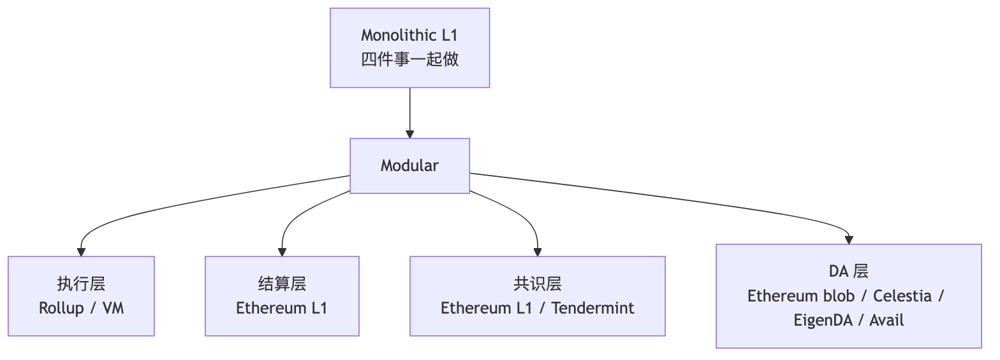
DA 层只保证「数据可被任何人下载」，不做执行。Celestia 没有智能合约，吞吐却比 L1 高一个数量级——DA 不是「便宜的 L1」。
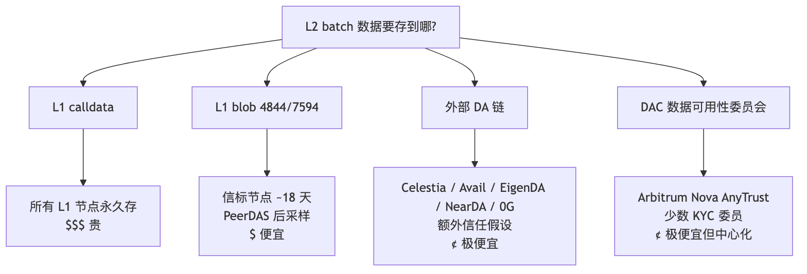
DAS 让轻节点能验证 DA。数据经 Reed-Solomon erasure coding 编码后，任意 50% 样本可达即可恢复完整数据。轻节点随机采样若干片段，能拿到则 DA 通过。这是 Celestia / PeerDAS 的核心机制。
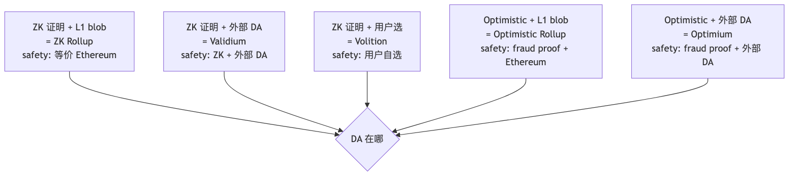
Validium / Volition 的工程取舍单独在第 11 章展开（包括失败案例 Astar zkEVM）。这里只需记住：DA 不在 L1 上，就不能等同于 Rollup 安全。
DA 选型参考：DeFi 主资金 → Ethereum blob；链游/社交/低值 NFT → Validium / Optimium；用户自选 → Volition（zkSync Era）；极致吞吐 → EigenDA（100 MB/s）；Cosmos 生态 → Celestia；Polkadot / Polygon CDK → Avail。
| 维度 | Ethereum blob | Celestia | EigenDA | Avail |
|---|---|---|---|---|
| 信任模型 | Ethereum 共识 | TIA PoS | restaked ETH（DAC + KZG） | AVAIL PoS |
| 当前吞吐 | 14 blob × 128KiB / 12s ≈ 150 KB/s | 8 MB / 6s ≈ 1.33 MB/s | 100 MB/s（DAC） | 4 MB / block |
| DAS | PeerDAS 1D 采样 | Light node DAS | 不做 DAS（DAC） | KZG + DAS |
| 100MB/天年成本 | $1–$50（接近 0） | ~$12,775 | ~$730 | $1500–3000 |
| 客户 | 几乎所有 L2 | Manta、Eclipse | Mantle、Celo | 部分 Polygon CDK |
blob_base_fee 长期 ≈ 1 wei，外部 DA 成本优势骤减（分析）。外部 DA 仍有意义的三种场景：1) 极致吞吐（EigenDA 100 MB/s）；2) 生态对齐（Cosmos→Celestia，Polkadot→Avail）；3) blob 拥堵时的缓冲。
本章回答「blob 价格为什么能逼近 1 wei」——这要把 type-3 交易、KZG 承诺、point evaluation precompile 三件事拆开来看。
EIP-4844（Proto-Danksharding）2024-03-13 Dencun 升级上线，新增 type-3 blob-carrying transaction。
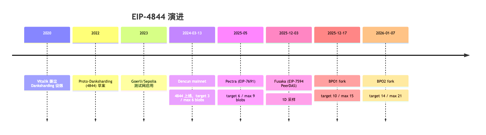
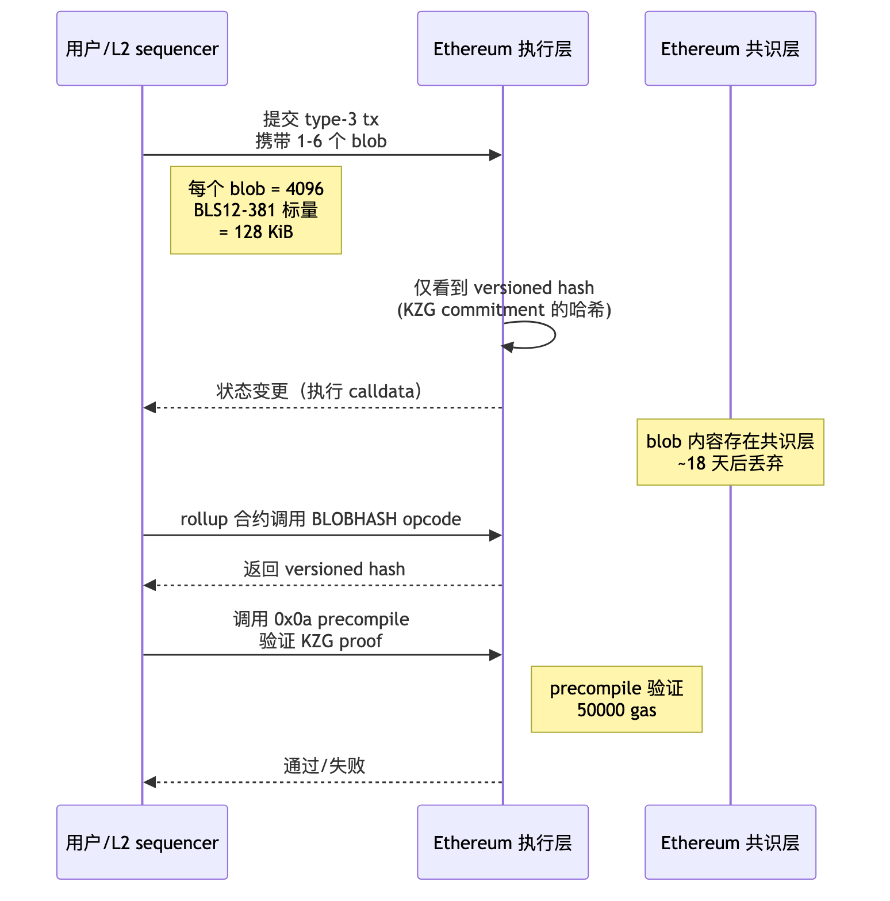
| 结构 | 大小 | 用途 |
|---|---|---|
| Field element | 32 字节 | BLS12-381 子群 r 模数下的标量 |
| Blob | 128 KiB（4096 个 field element） | 一个数据块 |
| KZG commitment | 48 字节（G1 群元素） | blob 的承诺 |
| Versioned hash | 32 字节 | 第 0 字节是 version (0x01) + sha256(commitment)[1:] |
| KZG proof | 48 字节 | 「blob 在某点取某值」的证明 |
| Type-3 tx | calldata + 多个 (commitment, blob, proof) | 完整交易 |
Blob = 多项式 P(x) 的 4096 个采样值，压缩成 48 字节 KZG commitment（多项式在秘密点 τ 的椭圆曲线取值）。关键性质：承诺不泄漏系数（τ 未知）；48 字节 proof + 一个 pairing 即可验证「某点取某值」。
2D KZG 多项式承诺是 Danksharding 的核心——每个 blob 单独承诺，多个 blob 在另一维度承诺，方便采样和恢复。
EVM 不能直接读 blob 内容，但可用 point evaluation precompile (0x0a) 验证 KZG proof：「blob 在点 z 取值 y」——50000 gas。这是 rollup 连接链下证明系统与 blob 的关键接口。
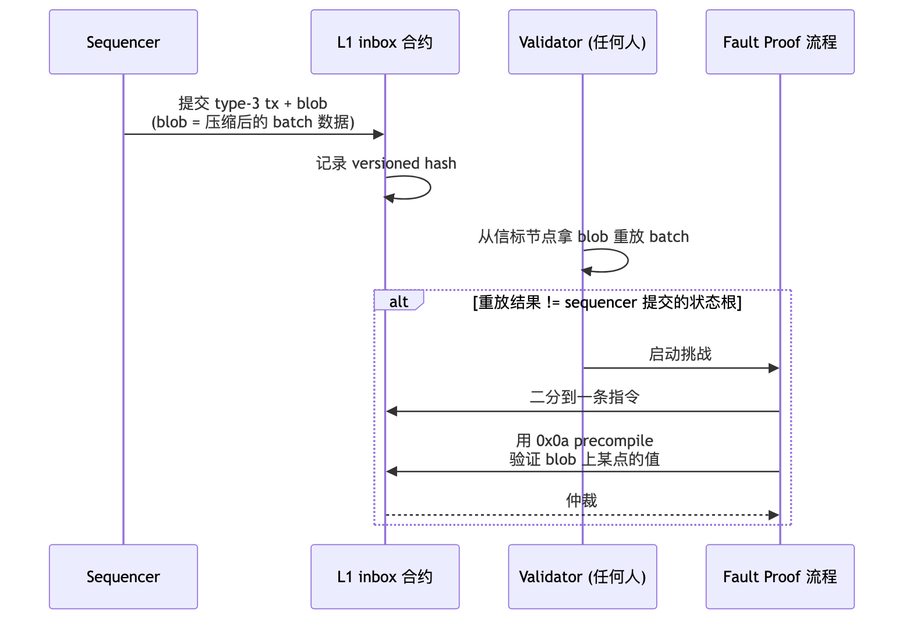
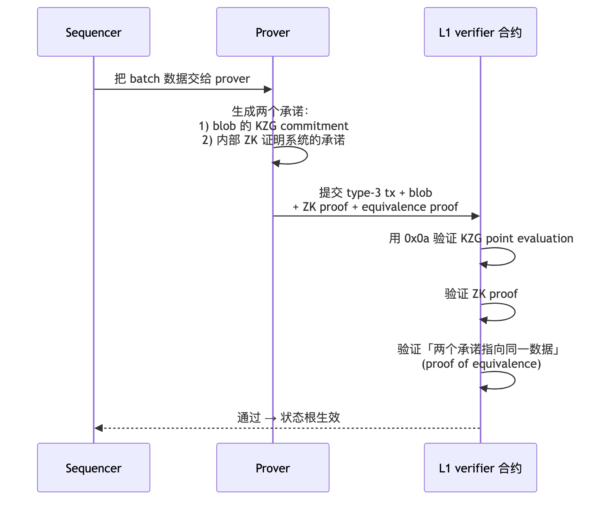
「Proof of equivalence」是 ZK Rollup 用 blob 的关键技巧——它把 blob 的 KZG 承诺和 ZK 内部承诺连起来。这样 ZK 系统不需要为 KZG 写电路，KZG 验证完全在 0x0a precompile 里做。
单笔 L2 tx DA 成本 ≈ (tx_calldata_size_bytes / blob_capacity_bytes) × blob_base_fee
blob_capacity = 14 × 128 KiB = 1.75 MiB / 12s slot（BPO2）
blob_base_fee ≈ 1 wei（截至 2026-04）
一笔 DEX swap（压缩后 ~200B）→ DA 成本 < 0.0001 美分
DA 已几乎免费。Rollup 真正成本中心已转移到 prover（ZK）和 sequencer infra。
| 影响维度 | 4844 之前 | 4844 之后 |
|---|---|---|
| Rollup 月度 DA 支出（Top 5 总和） | $50M+ | $1M-$5M |
| 单笔 L2 tx 费用 | $0.5–$2 | $0.005–$0.05 |
| L2 利润率 | 5–20% | 80%+（OP）/ 50%+（ZK） |
| 用户体验 | 高费用劝退 | 接近 web2 |
EIP-7691 把 blob target 3→6、max 6→9；EIP-7918 引入 reserve price。
实测（ethPandaOps）：daily blobs 21,300→28,000、blob space 2.7→3.4 GB，供给已超过需求（rollup 需求未达 target 6）。
EIP-7594 PeerDAS 是 Fusaka 升级（2025-12-03）的核心，引入 1D Reed-Solomon 编码 + 列采样：
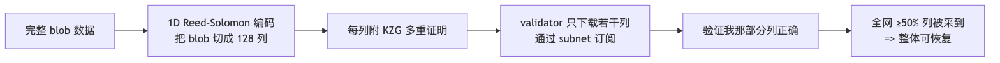
PeerDAS 把单节点存储压力从「全部 blob」降到「采样若干列」——这是 blob 容量横向扩展的物理基础。BPO1 / BPO2 的提速正是基于 PeerDAS 上线后才敢做。
Fusaka 还引入了轻量级 fork 机制——只调 blob 参数、不改其他规则的 fork：
| Fork | 时间 | target / max |
|---|---|---|
| Fusaka mainnet | 2025-12-03 | 6 / 9（沿用 Pectra） |
| BPO1 | 2025-12-17 | 10 / 15 |
| BPO2 | 2026-01-07 | 14 / 21 |
| BPO3?（计划中） | 2026-Q3? | 21 / 32（视采样验证健康） |
BPO 的好处：节点运营商有时间监控 PeerDAS 健康，参数提升不必绑大版本。这是以太坊治理「快慢双轨」的成功实践。
完整 Danksharding 目标：2D Reed-Solomon 编码 + 完整 DAS，每 slot 32 MB+ 数据可用容量。
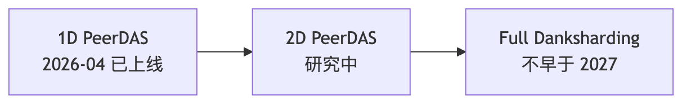
Vitalik 在 2026 EthCC 演讲中给出非正式时间表「2D PeerDAS 不早于 2027」。BPO2 的 14 / 21 是 2026 年的稳定状态。
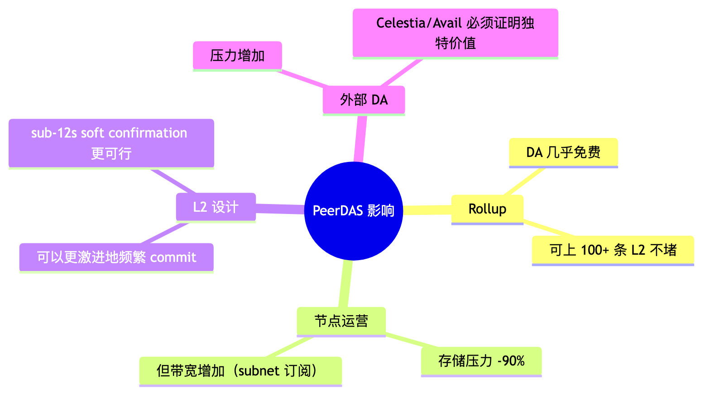
2026-04 现状速记：Fusaka mainnet 2025-12-03 已上线；PeerDAS 1D 采样运行 4+ 个月，状态健康；Blob target 14（BPO2 后）；Blob 利用率约 4 blobs/block，远低于 14 target；blob_base_fee 长期接近 1 wei；下一步 2D PeerDAS 仍在研究。
「DA 已解决」之后剩下的问题是「这条 rollup 还有多少 training wheels」——L2BEAT 给出业界标准答案。
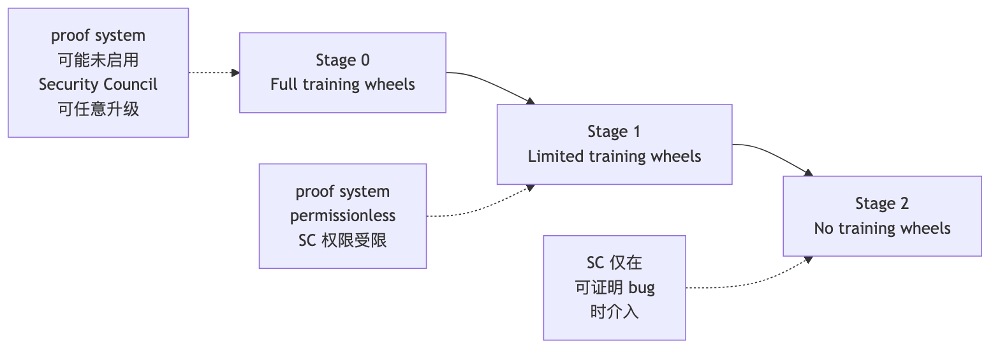
L2BEAT 给每条 L2 一张五维雷达图，每维四档颜色（绿/黄/橙/红）：
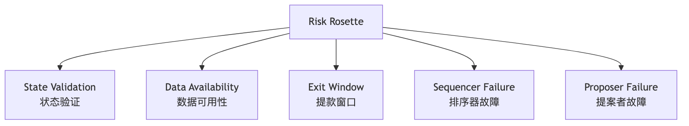
按 OP Stack Stage 1 specification，Stage 1 必须：
Stage 2 在 Stage 1 基础上：
截至 2026-04 没有任何主流 EVM L2 达到 Stage 2。最接近的候选是 Arbitrum（BoLD 已上）和 DeGate（应用 rollup），但都因 Security Council 仍保留 instant upgrade 权限而卡在 Stage 1。
5 步读法：1) 看 stage 数字（0/1/2）；2) 看 Risk Rosette 五维有几个不是绿的；3) 看 Permissions 标签：Security Council 几人？多签门槛？是否包含外部独立成员？4) 看 Contracts 升级 timelock 长度；5) 看 Stage 升级条件清单（还差哪几条到下一阶段）。
| Stage | EVM 主流 L2（截至 2026-04） |
|---|---|
| Stage 2 | 暂无主流 EVM L2 ← 注意这一行 |
| Stage 1 | Arbitrum One（BoLD 已上）、OP Mainnet（2024-06 fault proof）、Base（2024-10 fault proof + 0.08 ETH 抵押）、Scroll（2025-04 Euclid 升级后达成）、Ink、Unichain |
| Stage 0 | zkSync Era、Linea、Starknet、Polygon zkEVM（即将退役）、Taiko、Blast、Mantle、Manta Pacific、Mode 等 |
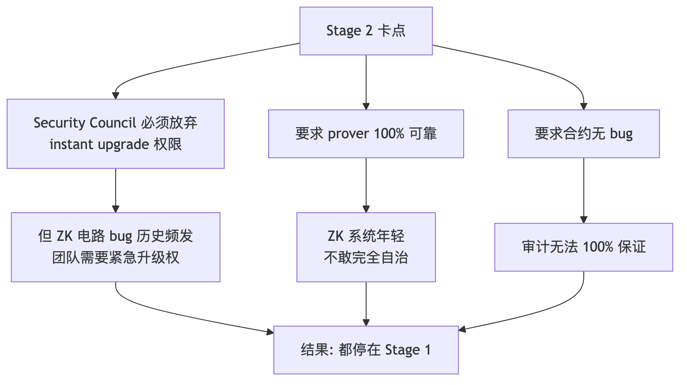
Stage 评级 ≠ 安全评级。实际安全还需评估：sequencer 抗审查（force inclusion）、升级 timelock 长度、合约审计与 bug bounty。例：Blast 和 zkSync Era 同为 Stage 0，但 Blast 因 fraud proof 未上线风险更高。
本章不为每条链铺垫「Stage / DA / TVL」——这些信息都在 9.8 的对照表里查；正文只讲这条链与其他 OP/Arbitrum 派系的差异点。所有数据用 L2BEAT 实时复核。
Arbitrum 的差异化在「自研栈彻底不同」：
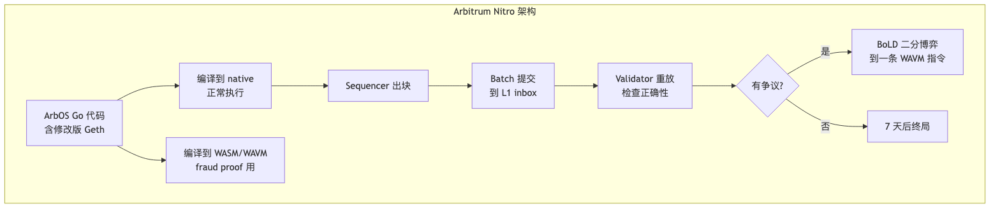
三件事让 Arbitrum 长期 TVL #1：Nitro（Geth 编进 ArbOS、双轨执行 native + WAVM）、Stylus（Rust/C++ WASM 合约，详见 F.14）、BoLD（首个生产级 permissionless 挑战）。代价是 Orbit 派生链增长不如 Superchain。
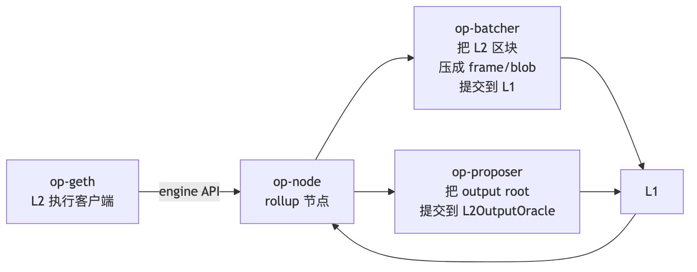
四个组件（OP Stack 文档）：op-geth（L2 执行）、op-node（derivation，从 L1 数据派生 L2 区块）、op-batcher（压 L2 区块成 frame/blob，提交 L1）、op-proposer（提交 output root 到 L2OutputOracle）。
Superchain：OP Stack 派生链共享 sequencer 集、桥、治理（OP token）。截至 2026-04 已含 Base、Mode、Mantle、Worldchain、Soneium、Ink、Unichain 等数十条链。
差异点不在技术（Base 就是 OP Stack），在分发：Coinbase App store 推送 + USDC 直接打入交易所，让 Base 上线即 TVL #2，与 Arbitrum 合计占 L2 TVS 75%+（BlockEden 2026-02）。Stage 1 的实现也最严：每个错误提案 slash 0.08 ETH 抵押。Base 也是「中心化运营商持续输送用户」最强样本——其 sequencer 的两次停机详见 F.15。
差异点是「魔改 OP Stack 让存款自动赚 L1 staking + RWA 收益」，2024 年 TVL 一度超 $2B；代价是 L2BEAT 至今仍标注「fraud proof under development」——sequencer 错时用户无法挑战、无法强制提款，安全几乎完全依赖团队多签。Blast = 同 Stage 0 中风险最高的一类。
Mantle 是少数不走 Ethereum blob 的主流 L2（DA 在 EigenDA），同时 2026 走 OP Succinct 把 OP Stack 升级成 ZK 验证。TVL ~$1B+，自营 mETH LST，是观察「Optimistic → ZK 迁移路径」与「外部 DA 在 Fusaka 后能否守住」的两个独特实验场。
差异点是 DA：用 Data Availability Committee（DAC，少数 KYC 委员）替代 L1 blob，TVL ~$49M。适合：社交、链游、低值高频（Reddit Community Points 早期用过）；不适合：DeFi 主资金（DAC 信任假设不可绕过）。
| 链 | 主营 | DA | Stage（2026-04） | TVL 估 | 运营 |
|---|---|---|---|---|---|
| Mode | DeFi | Ethereum blob | Stage 0 | 中 | Mode Foundation |
| Manta Pacific | ZK 应用 + 通用 | Celestia | Stage 0 | 中 | Manta Network |
| opBNB | BSC 系扩容 | BNB | 非以太坊 L2 | 中 | BNB Chain |
| Lisk | 通用 | Ethereum blob | Stage 0 | 小 | Lisk |
| Soneium | 媒体 / 游戏 | Ethereum blob | Stage 0 | 小-中 | Sony Block Solutions Labs |
| World Chain | 身份 / 应用 | Ethereum blob | Stage 0 | 中 | Tools for Humanity（Worldcoin） |
| Fraxtal | DeFi | Ethereum blob | Stage 0 | ~$17.6M | Frax Finance |
| Cyber | SocialFi | Ethereum blob | Stage 0 | 小 | Cyber Connect |
| Unichain | DeFi | Ethereum blob | Stage 1 | ~$43.5M | Uniswap Labs |
| Ink | 通用 | Ethereum blob | Stage 1 | ~$478M | Kraken |
| DeBank Chain | 钱包/聚合 | Ethereum blob | Stage 0 | 中 | DeBank |
| Zora | NFT | Ethereum blob | Stage 0 | 小 | Zora |
注意：opBNB 不是 Ethereum L2——它 settle 到 BNB Smart Chain，不到 Ethereum，安全性等价于 BNB 链，不在 L2BEAT 里。
| L2 | 框架 | Stage | DA | 信任假设额外项 |
|---|---|---|---|---|
| Arbitrum One | Nitro | Stage 1 | Ethereum blob | BoLD permissionless |
| Arbitrum Nova | Nitro AnyTrust | Stage 0 | DAC | 2-of-N DAC 诚实 |
| OP Mainnet | OP Stack | Stage 1 | Ethereum blob | OP fault proof |
| Base | OP Stack | Stage 1 | Ethereum blob | OP fault proof + 0.08 ETH stake |
| Blast | OP Stack（魔改） | Stage 0 | Ethereum blob | fraud proof 未上线 |
| opBNB | OP Stack | 非 ETH L2 | BNB | BNB 链信任 |
| Mode | OP Stack | Stage 0 | Ethereum blob | OP fault proof |
| Mantle | 自研 + Module | Stage 0 | EigenDA | EigenDA committee |
| Manta Pacific | OP Stack | Stage 0 | Celestia | Celestia PoS |
| Lisk | OP Stack | Stage 0 | Ethereum blob | OP fault proof |
| Soneium | OP Stack | Stage 0 | Ethereum blob | OP fault proof |
| World Chain | OP Stack | Stage 0 | Ethereum blob | OP fault proof |
| Fraxtal | OP Stack | Stage 0 | Ethereum blob | OP fault proof |
| Cyber | OP Stack | Stage 0 | Ethereum blob | OP fault proof |
| Unichain | OP Stack | Stage 1 | Ethereum blob | OP fault proof |
| Ink | OP Stack | Stage 1 | Ethereum blob | OP fault proof |
| Zora | OP Stack | Stage 0 | Ethereum blob | OP fault proof |
几乎所有新生 Optimistic L2 基于 OP Stack。Arbitrum Nitro 技术领先（BoLD 唯一），但 Orbit 派生链增长不如 Superchain。Conduit、Caldera、Alchemy 三大 RaaS 都以 OP Stack 为默认。
同样的体例：Stage / DA / TVL 看 10.11 表，正文只讲差异点。
差异点：ZK 系唯一独立的 rollup stack——Matter Labs 把 ZK Stack 完全开源给 Hyperchain（ZK 版 Superchain），加上原生账户抽象（所有账户即合约）和 Volition（每笔交易自选 Rollup 或 Validium）。代价是底层 EraVM 不是 EVM，工具链需 zkSolc 编译。
差异点：Bitget 2025-04 报道 Euclid 升级把 halo2 换成 OpenVM RISC-V zkVM——吞吐 5×、成本 -50%、sequencer permissionless，一举越过 Stage 1。Type-2 等价度让主网工具链开箱即用，是「想要 EVM 完全兼容 + ZK 提款」的默认选择。
差异点：Consensys 自营，MetaMask 集成最深，LXP 积分制带动 TVL。技术上从 Type-2 向 Type-1 推进——截至 2026-04 audit 仍未结束、主网未正式切换 Type-1（Linea changelog）。两次 sequencer 停机（详见 F.15）暴露其中心化是 Stage 1 的核心阻碍。
差异点：Cairo VM + 纯 STARK（无可信设置，proof 大但可证明性高）。性能在 ZK 阵营领先，但 Solidity 生态绑定弱。2026 完成「全 validator 自跑 sequencer」是其去中心化里程碑（Starknet 2025 retro）。
2026-07-01 Mainnet Beta 退役（Polygon 公告），年损 $1M+。教训三点：blob 后没及时跟上、Type-2/3 等价度不够、生态投入被 CDK 稀释。ZK 部分分拆为 Polygon ZisK 子公司，Polygon 主线转向 AggLayer + PoS。
差异点是两种独立设计同时押：based sequencing（直接用 L1 proposer，天然抗审查）+ 多证明（SP1 + RISC0 + TEE 三套独立 prover，任一通过即可，避免单证明系统 bug 致全链伪造，OpenZeppelin Shasta audit）。
Ignition Mainnet 2025-11-19 启动，前期 sequencer 出空块；token 2026-02-12 TGE；2026-03-17 发现 critical 漏洞，v5 修复版 2026-07 计划上线。差异点：Noir DSL（接近 Rust 的隐私 DSL）+ Ultra Honk 证明系统。当前唯一活的隐私 L2。
差异点：证明在用户自己设备上生成，状态由用户保管，隐私默认；委托证明在低端设备 1-2 秒。Alpha testnet v6 在跑，主网多次延期到 2026。a16z + 1kx + HackVC $25M 投资 让它独立成「Miden」公司。
差异点：基于 Mina（22KB 全链）的 Zeko ZK rollup 框架。Boom Testnet 已结束（500K tx），主网准备中，Berkeley 升级（Q2 2026）启用可编程 zkApps，Kimchi prover 升级 Q3 2026。
2025-03-31 退役，用户迁移到 Soneium。和 Polygon zkEVM 一样的教训：CDK 早期 Validium 在 blob 时代失去成本优势。
| L2 | zkEVM 类型 | Stage（2026-04） | 证明系统 | DA |
|---|---|---|---|---|
| zkSync Era | Type-4 | Stage 0 | Boojum (STARK+SNARK) | Ethereum blob / Validium |
| Scroll | Type-2 | Stage 1 | OpenVM (RISC-V zkVM) | Ethereum blob |
| Linea | Type-2 (→ Type-1 Q1 2026) | Stage 0 | Vortex / PLONK | Ethereum blob |
| Polygon zkEVM | Type-2/3 | Stage 0（2026-07 退役） | PIL / Plonky2 | Ethereum blob |
| Starknet | non-EVM (Cairo) | Stage 0 | Stone / S-two STARK | Ethereum blob |
| Taiko Alethia | Type-1 (based) | Stage 0 | SP1 + RISC0 + TEE 多证明 | Ethereum blob |
| Aztec | non-EVM (Noir) | pre-stage | Ultra Honk | Ethereum blob |
| Polygon Miden | non-EVM (MASM) | testnet | 客户端 STARK | Ethereum blob |
| Mina (Zeko) | non-EVM | testnet | Pickles / Kimchi | Mina L1 |
| Astar zkEVM | Type-2 | 退役 | - | - |
2026-04 ZK L2 现状：zkSync TVL 高、Scroll Stage 最先进、Linea 工具链最易用、Starknet 性能最强——没有绝对第一。Polygon zkEVM 退役说明 ZK L2 不是「先发就赢」；差异化已不是「能不能跑 EVM」，而是 prover 性能 + 生态飞轮 + 治理透明度。
Validium = ZK 证明 + 链下 DA。安全模型：ZK 数学正确 + DA 提供方诚实。
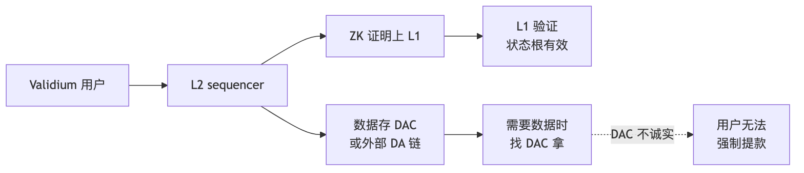
Validium 的核心风险：sequencer + DAC 同时不诚实时，用户无法构造提款证明——资金被冻在 L1 合约里。这就是 Validium 一直没成为主流的原因。
Volition = 每笔交易自选 Rollup 模式或 Validium 模式。
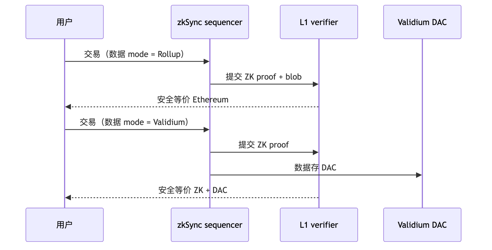
zkSync Era 是典型实现：同一合约里为不同交易选不同 mode。
| 项目 | 类型 | 状态（2026-04） | 备注 |
|---|---|---|---|
| Immutable X | StarkEx Validium | 2026 初已合并到 Immutable Chain（zkEVM L2），X 桥已合到主桥（Immutable docs） | NFT 链游 |
| Sorare | StarkEx Validium | 运行中 | 体育 NFT |
| dYdX v3 | StarkEx ZK Rollup | 已退役，迁移到 dYdX Chain (v4) | 永续合约 |
| Polygon Miden Validium 模式 | 自研 | testnet | Miden 主网未上线 |
| rhino.fi | StarkEx Validium | 运行中 | DeFi 桥 |
纯 Validium 项目陆续转型：Immutable X 转 zkEVM L2、dYdX 转应用链、StarkEx 减少新客户。Volition（用户自选）正在取代纯 Validium，zkSync 设计成为新范式。
Volition 适合：应用既有「主资金」（高价值，要 Rollup 安全），又有「日常微交易」（低价值，要省钱）；链游发售 / 大额交易用 Rollup，日常 PvP / 道具交易用 Validium；DEX 大单走 Rollup 留下完整审计轨，小单走 Validium。
Astar zkEVM（Polygon CDK Validium，2024-03 上线，2025-03 退役）：用户增长慢、流动性碎片化、运营成本高于收入。结论：Fusaka 后 blob 几乎免费，外部 DA 成本优势削弱，纯 Validium 已难成好产品定位——除非吞吐 / 隐私 / 治理需求让 L1 DA 不够用。
Sequencer 决定 L2 交易排序、出块、batch 提交——绝大多数 L2 的 sequencer 是单一公司运行的单实例，是当前 L2 中心化的最大来源。
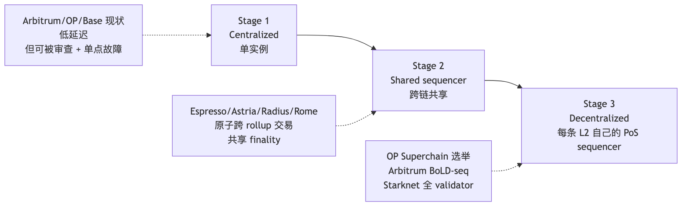
优点：低延迟（几十 ms 软确认）、MEV 简单、运营便宜。缺点：
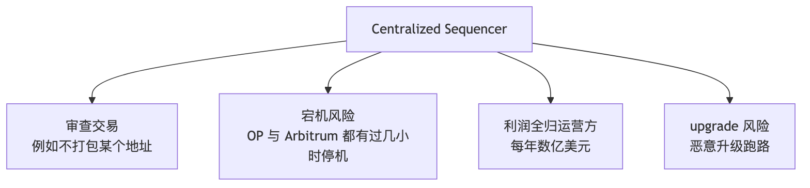
机制和 7-day 上限见 3.5；本章只需记住它是 Stage 1 硬要求、是 sequencer 中心化的最后一道安全阀。
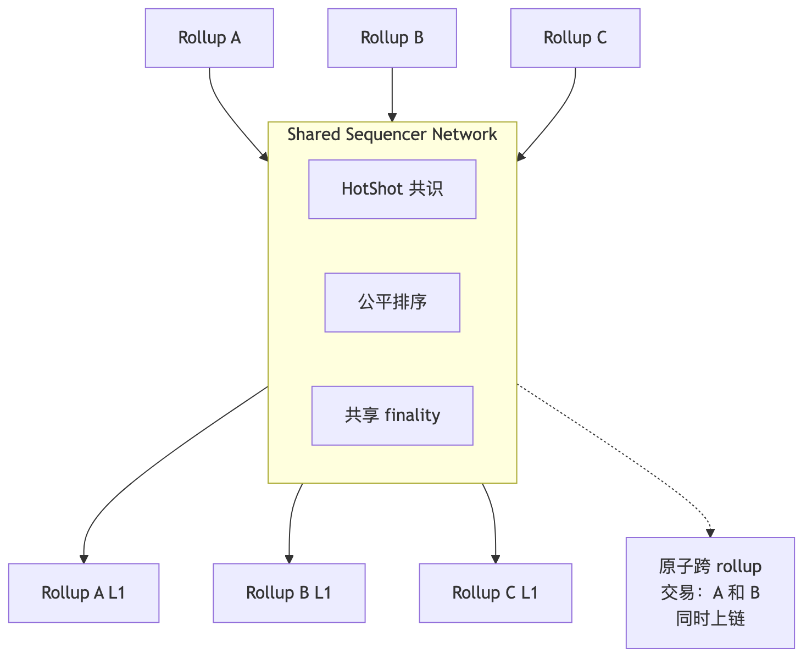
| 项目 | 状态 | 架构 | 客户 |
|---|---|---|---|
| Espresso | 2026-02-12 主网启动 | HotShot + Tiramisu DA | Arbitrum Orbit、Cartesi、若干 OP Stack 链 |
| Astria | 2026 停运（[需作者核实]，单一来源 MEXC 报道；审稿时点未在 astria.org 官方渠道独立确认） | 基于 Celestia | 报道称原客户迁移到 Espresso 或 native |
| Radius | testnet 运行中 | trustless 排序，PVDE | 待客户上 |
| Rome | 公测 | 基于 Solana 做 sequencer，Rhea + Hercules | 实验性 |
Astria 关闭 → Espresso 存活的差异：shared sequencer 在技术上可行，但商业飞轮难启动（客户 L2 不愿放弃 sequencer 利润）。详见 F.11 / F.12 完整时间线与经济模型。
| L2 | 进度 |
|---|---|
| Arbitrum | BoLD（validator 端去中心化）完成，sequencer 仍 Offchain Labs 单实例，BoLD-sequencer 在研究 |
| Optimism | Superchain sequencer 选举 + ETH stake 在测试网 |
| Base | 跟 Optimism 路线 |
| zkSync | 自有 PoS sequencer 集，路线图未上线 |
| Starknet | 全 validator 自跑 sequencer 目标 2026 完成（Starknet 2025 retro） |
| Scroll | Euclid 升级已 permissionless sequencer（2025-04） |
| Taiko | based sequencing（直接用 L1 proposer），天然去中心化 |
Based sequencing 直接用 L1 proposer 当 L2 sequencer——你的 L2 sequencer 就是当前 L1 出块者。优点：天然继承 L1 抗审查、无 sequencer 集中化问题、与 L1 同步出块。缺点：软确认延迟 = L1 出块时间（12 秒）、不能自定义 priority fee 策略、L1 拥堵时 L2 也卡。Taiko 是当前最大 based rollup 实现。
Sequencer 利润完整数字模型在第 17 章。这里只点核心：放弃 sequencer 利润 ≈ 放弃主要现金流，所有「计划中」推进缓慢都源于此。
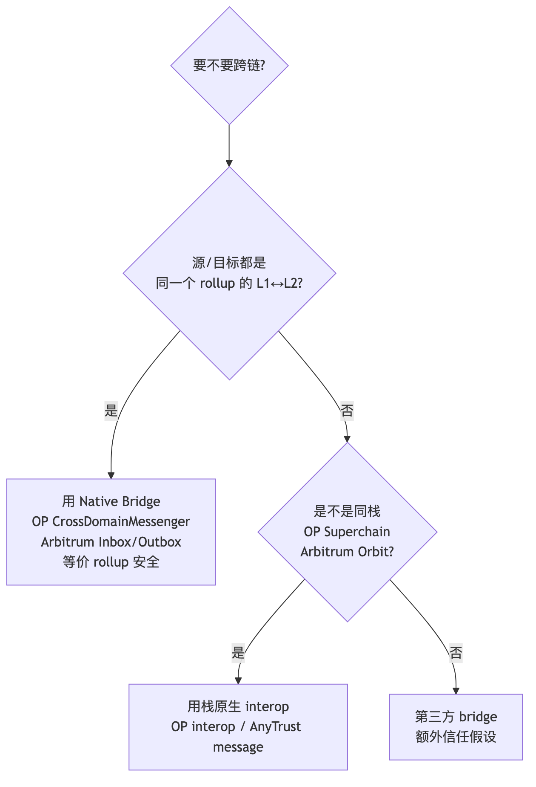
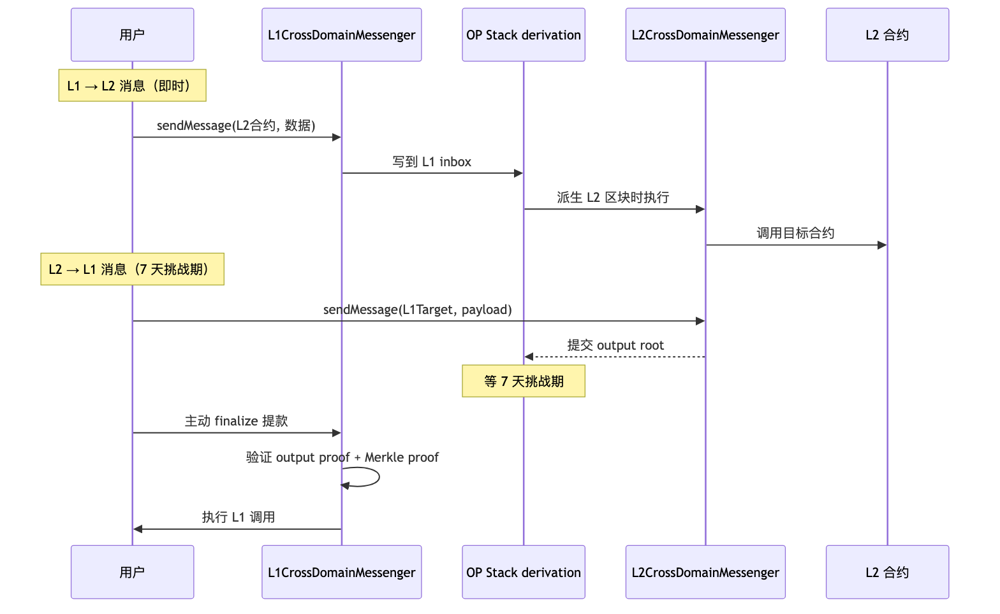
| 协议 | 验证模型 | 安全 | 强项 | 注意 |
|---|---|---|---|---|
| LayerZero v2 | 应用可配置 DVN（Decentralized Verifier Network）+ executor | 由应用自选 DVN 集 | OFT 标准、覆盖最广（70+ 链）、市场占 ~75% 跨链消息量 | DVN 配置不当 = 单点 |
| Wormhole | 19 个 Guardian 多签 + 部分 zk-light-client | 13/19 多签 | Solana / 非 EVM 覆盖最强、NTT 原生 token 转账 | 历史有过 $326M 事故 |
| Hyperlane | 应用可部署自己的 ISM（Interchain Security Module） | 应用自选 validator 集 | permissionless 部署（任何 rollup 自己接入） | 安全自负 |
| Chainlink CCIP | DON + Risk Management Network 双层 | Chainlink Labs 信任 + RMN 保险 | 银行 / 合规客户、CCT 跨链 token 标准 | 受限 token 集 |
| Circle CCTP | 原生 USDC burn-mint | Circle 主权 | 唯一的 native USDC 跨链 | 仅 USDC |
| Axelar | PoS validator 集 + GMP | 60 chains，2026-02 单日 $4.5M 转账 | Cosmos 系 + GMP | 中等流动性 |
| Across | Intent + UMA 乐观验证 | 中继商前置垫付，UMA 后置仲裁 | EVM 间用户体验 < 1 分钟（中继商垫付），但协议级 settlement 走 UMA OO，仍有 ~14400s（4 小时）默认挑战期；relayer 跑路时用户实际拿到资金时间依赖 OO 裁决 | 仅 EVM |
| Stargate | LayerZero + 流动性池 | LZ DVN | EVM 间 native token 转账 | 滑点 |
| Synapse | 自有 multichain + AMM | 桥多签 | 跨 EVM/非 EVM 资产 | 中等流动性 |
| Connext | xCall 模型 | 多 router | 可编程跨链 action | dApp 开发友好 |
| deBridge | DLN 流动性网络 | validator 集 | 速度快、价格稳 | 有限链对 |
| Squid Router | 基于 Axelar | Axelar 验证集 | bridge aggregator + DEX | 路由 + 滑点 |
| IBC | light client 验证 | 链双方共识 | trust-minimized 标杆 | 两端都需轻客户端 |
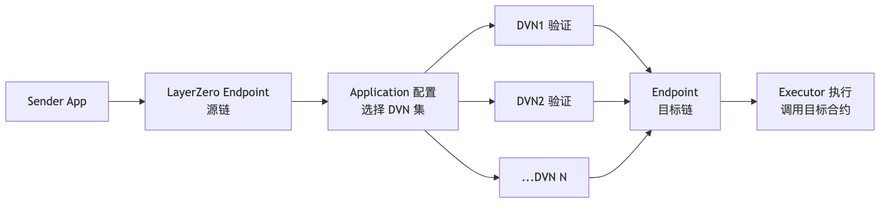
LayerZero v2 的关键创新：DVN 可由应用自选。例如选「Google Cloud + Polyhedra + LayerZero Labs」三个 DVN，需要 3-of-3 都签名才执行——比单一桥安全模型可定制得多。
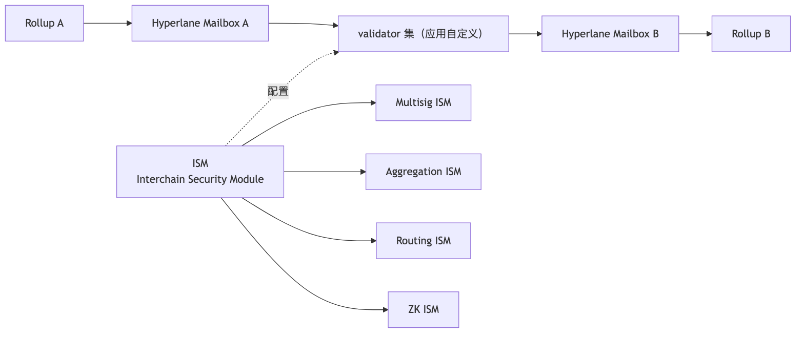
Hyperlane 适合自建 rollup：你的 L2 不需要等 LayerZero / Wormhole 「批准」接入——直接 fork Hyperlane 部署 Mailbox 就能与所有 Hyperlane 链互通。这是 OP Stack / Orbit 之外的「permissionless interop」。
2026 实战：合规资产 / 银行客户走 CCIP；USDC 走 CCTP；DeFi 用户最优价用 Across；自建 rollup 互操作用 Hyperlane。没有「一桥统天下」。
IBC：两端各跑对方的 light client，消息靠 light client 验证 + Merkle proof。
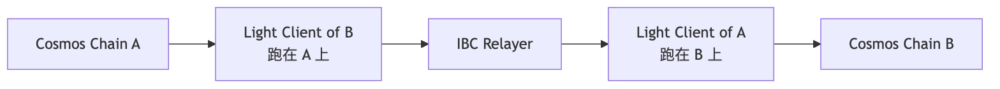
IBC 不需要多签或 staker，但两端都需跑对方轻客户端，主要限于 Cosmos 系（Tendermint 共识）。Polymer Labs 在做 EVM ↔ IBC 适配。
2026 实战决策：监管资产 / 银行客户 → CCIP 或 CCTP；自有 token 想 omnichain → LayerZero OFT 或 Wormhole NTT；自建 rollup interop → Hyperlane（permissionless）；Solana 桥 → Wormhole；同 OP Superchain → 用 OP interop；同 Arbitrum Orbit → 用 AnyTrust message；Cosmos 系 → IBC（trust-minimized 黄金标准）；DeFi 用户最优价格 → Across / deBridge / Squid。
用任何第三方桥前需要确认：1) 桥的安全模型（多签 N/M？light client？ZK？）；2) 验证者集是否分散（同一组织？同一国家？）；3) 桥合约升级权在谁手里，timelock 多长；4) 历史有没有事故、事故后如何处理；5) 桥 TVL / 24h volume 比例（流动性是否足够你的金额）；6) 单笔上限是否够你的转账。
桥是 Web3 最高风险板块：TVL 不到 DeFi 10%，但占被盗资金 50%+（Zealynx）。
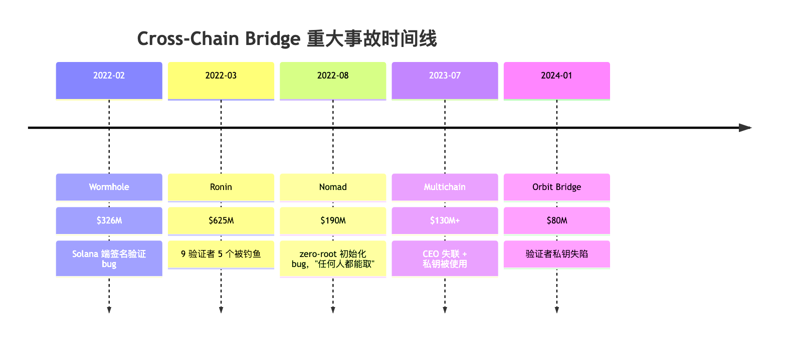
攻击者在 Solana 端铸造 120,000 wETH（约 $326M），抽空 ETH 储备。
signature verification 函数未校验 guardian set 是否真正签名——攻击者用 fake account 替换 system program，bridge 直接 mint wETH（Halborn post-mortem）。
// 漏洞简化版：未校验 sysvar 是真 sysvar
let sysvar = next_account_info(...)?;
// 直接信任 sysvar 内容，没检查 sysvar.key == &sysvar::instructions::id()
let signers = parse_sysvar(&sysvar.data)?;
verify_signatures(signers, message); // 攻击者控制 signers
修复：补上 sysvar.key == &solana_program::sysvar::instructions::id() 校验。Jump Crypto 注资 $326M 填上窟窿，桥继续运行。
教训：跨链消息必须严格校验 sender / signer / message format。Solana account model 比 EVM 复杂，更易出 account 混淆 bug。
攻击者偷走 173,600 ETH + 25.5M USDC（约 $625M，Web3 历史第二大单笔损失）。
9 个 validator 多签，签 5 即可。攻击者社工钓鱼员工拿 4 个私钥；第 5 个签名来自 Axie DAO 临时授权 Sky Mavis 代签——未及时撤销；5/9 达成，调用 withdrawERC20For 提走资产。
Sky Mavis 增发 RON 还款（6 个月还清），Ronin 桥重启后改 9/12 多签 + 更严格运维。
教训：multisig 不是 trust-minimized——同一组织/服务器的 N 个 validator 安全等于 1。临时授权必须有强制过期机制。
几小时内被掏空 $190M，上百地址复制粘贴交易提款——史诗级「众包抢劫」。
Nomad 在升级合约时，把一个 acceptableRoot 映射初始化成 0x00：
// 漏洞：升级时 _setAcceptableRoot(0x00, true);
// 结果：所有空 messageProof（默认是 0x00）都被接受
function process(bytes memory _message) public {
bytes32 messageHash = keccak256(_message);
require(acceptableRoot[messages[messageHash]], "!proven"); // bypass!
// ... 执行任意 message
}
第一个攻击者构造提款交易，其他人复制 calldata 只改 to 字段即可通过。Nomad 团队呼吁 white hat 归还，约 $36M 返还；桥停摆数月后用新架构重启。
教训：1) 升级合约要有完整 invariant 测试；2) mapping(bytes32 => bool) 零值（false）配合「0x00 被接受」是大坑；3) 公开 mempool 让单个 root cause 被数百人跟风放大。
多个链同时被掏空约 $130M+，链上数据显示是桥自己的私钥发起的合法交易——不是 hack，是「内鬼」。
BlockSec 分析：2023-05 CEO Zhaojun He 疑似被中国监管机构带走；CEO 是唯一掌握桥多签私钥的人（其他多签人形同虚设）；失联后私钥被某方使用分批提走资产。
Multichain 团队解散，部分资金未追回，桥永久关闭。
教训：桥的运营连续性 = 桥的安全。「跑路风险」是真实存在的桥风险，不是理论上的。永远要看「私钥实际由谁控制」，不只是看「multisig 是几个人」。
攻击者调用 withdraw，多签验证通过，掏空 $80M。根因：7 个 validator 私钥失陷（疑似私钥管理基础设施被入侵）。Orbit Chain 仍运营，但用户信任受损。
教训：KYC 多签 ≠ 安全——即使 validator 都是机构，私钥管理仍是单点。
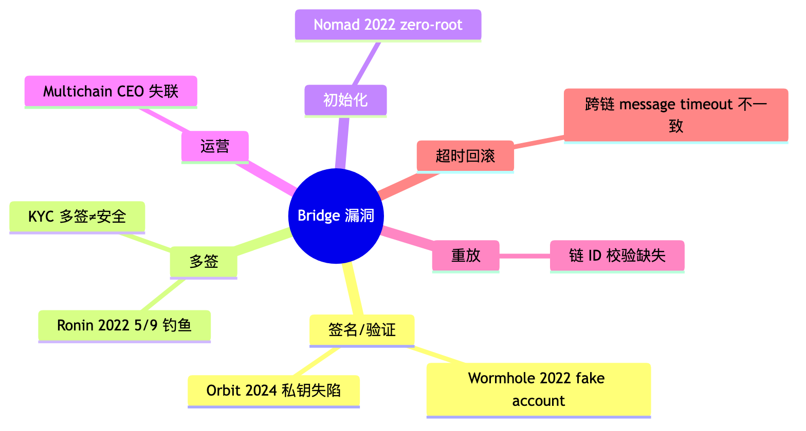
桥的硬规则：1) 永远不要把超过你能承受损失的钱跨过非 native bridge；2) 如果必须跨链，优先 native bridge（即使要等 7 天）；3) 第三方桥用之前看 DefiLlama Bridges 的 TVL / 24h volume 比；4) 看桥合约升级权（timelock 长度、Security Council）；5) 大额跨链分批，每笔金额低于桥单笔上限 50%；6) 关注桥的 Hypernative、Forta 实时告警。
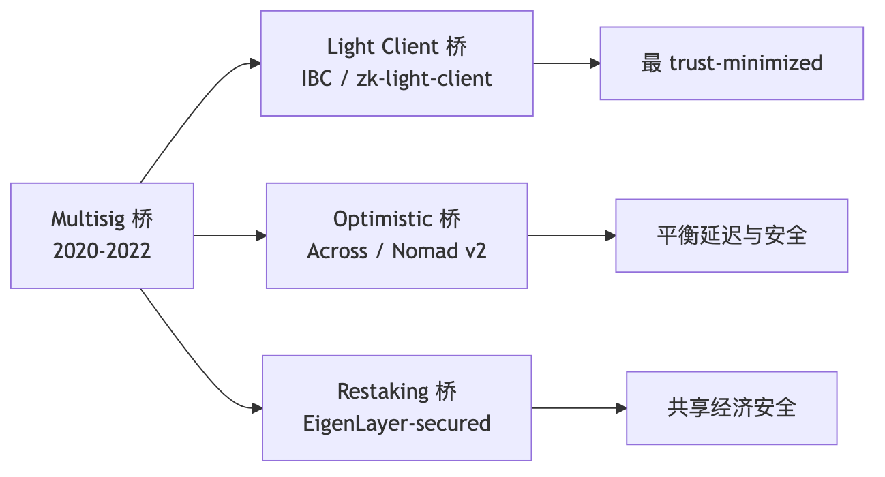
行业从 multisig 桥转向 light client 桥（Polymer、zkLink）和 restaking 桥（Renzo bridge AVS），但 LayerZero 等多签桥仍占 ~75% 市场份额。
L3 = 在 L2 上再起一条 rollup，settlement 用 L2 而非 L1。
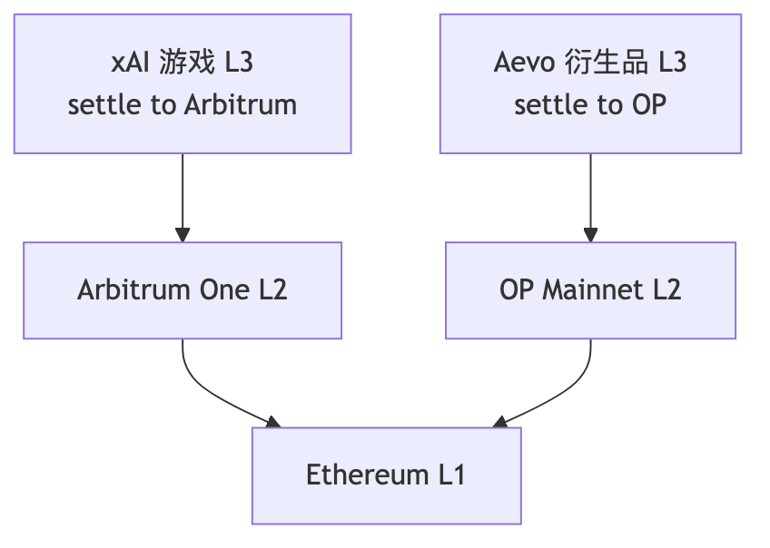
意义：应用专属吞吐 + 定制（gas token、私有交易、垂直优化）；DA 成本再降约 10×；但安全继承自 L2，多一层信任假设。
| 框架 | 维护方 | DA 选项 | 卖点 | 实例 |
|---|---|---|---|---|
| OP Stack | Optimism Foundation | Ethereum blob、Celestia、EigenDA、Alt-DA | Superchain 互操作、生态最大 | Base、Mantle、Mode、Worldchain、Zora、Soneium、Ink、Unichain... |
| Arbitrum Orbit | Offchain Labs | Ethereum blob (Rollup 模式)、AnyTrust DAC (便宜模式) | Nitro 性能、Stylus (Rust/C++)、自定义 gas token | xAI 系列、若干链游 |
| ZK Stack | Matter Labs | Ethereum blob、Validium、Volition | ZK 安全、Hyperchain 互操作、原生 AA | Cronos zkEVM、Sophon |
| Polygon CDK + AggLayer | Polygon Labs | Ethereum blob、AggLayer、Validium | AggLayer 统一流动性、ZK 或 OP 双栈（CDK Multistack） | 40+ 链在用 |
| Starknet (Madara) | StarkWare 系 | Ethereum blob | Cairo VM、最高 prover 效率 | Pragma、Kakarot |
| Sovereign SDK | Sovereign Labs | 任意（Bitcoin / Celestia / Ethereum） | 无 settlement 层、p99 < 10ms 软确认 | Rollkit 系 |
| Stackr | Stackr | 任意 | micro-rollups（应用每个函数独立 rollup） | 实验性 |
| 维度 | OP Stack | Arbitrum Orbit |
|---|---|---|
| 生态 | Superchain（数十条链） | Orbit（数十条 L2/L3） |
| 互操作 | OP interop（统一 messaging） | AnyTrust message |
| 编程语言 | Solidity | Solidity + Stylus (Rust/C++) |
| DA 选项 | 多（blob/Celestia/EigenDA） | 多（blob/AnyTrust DAC） |
| 治理参与 | OP Token Houses | Arbitrum DAO |
| sequencer 利润 | 自留 + 部分回流 OP | 自留 |
| 适合 | 想加入 Superchain 流量 | 想最大自主权 + Stylus |
| RaaS | 支持栈 | 代表客户 |
|---|---|---|
| Conduit | OP Stack、Arbitrum Orbit、Polygon CDK | Codex、Plume、Katana、Zora、Aevo、Proof of Play |
| Caldera | OP Stack、Arbitrum Orbit | Manta Pacific、Treasure |
| Alchemy Rollups | OP Stack | Alchemy 自营 |
| Gelato RaaS | OP Stack、ZK Stack、Polygon CDK 多栈 | 多家 |
市场预期（截至 2026-04）：RaaS 会收敛到 3–4 家头部（Conduit、Caldera、Gelato、Alchemy），中小厂面临洗牌（BlockEden 2026-03）。
| 因素 | 自建 | RaaS |
|---|---|---|
| 启动时间 | 3–6 月 | 1–2 周（实测 23 分钟） |
| 月成本 | $10k–$50k | $5k–$30k |
| 定制深度 | 任意 | 受栈支持 |
| 升级跟进 | 自己跟 OP Stack release | RaaS 包办 |
| 退出门槛 | 完全自主 | 数据迁移成本中等 |
决策建议：第一条 rollup → RaaS 上线；规模到亿美金 TVL → 评估自建 sequencer 把利润内化。
Aevo（衍生品 dApp）：订单簿离链撮合 + OP Stack L2 结算到 Optimism，高频交易场景下的最佳「去中心化 + 性能」平衡点。
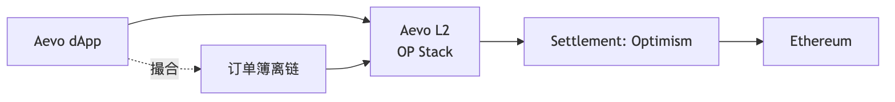
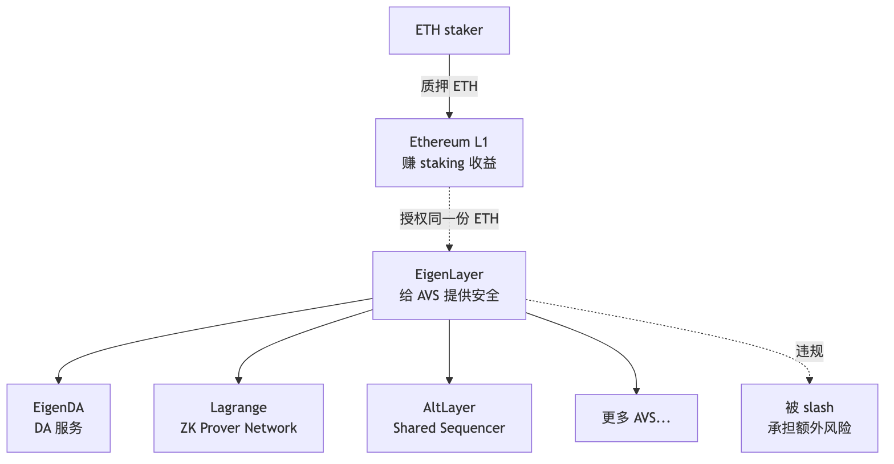
让已质押 ETH 再次质押到 AVS（主动验证服务），赚额外收益同时承担额外 slash 风险。
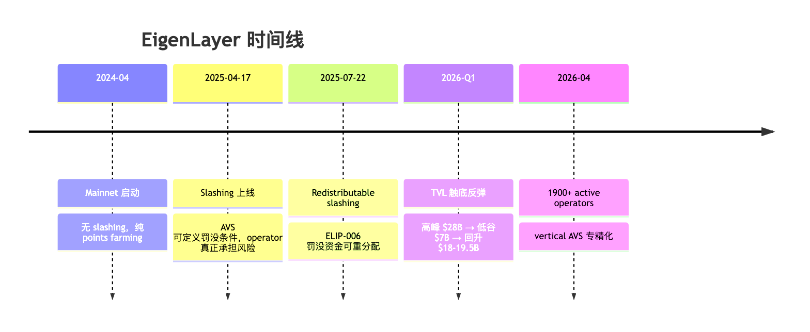
数据来源：BlockEden 2026-03、Blockdaemon Slashing Guide。
| 项目 | TVL | 特色 |
|---|---|---|
| EigenLayer | ~$15.3-19.5B（93.9% 市占） | 龙头，先发优势 |
| Symbiotic | ~$1.7B+ | 2025-01-28 主网启动即支持 slashing，最高定制（任何 ERC20 可作 collateral） |
| Karak | ~$102M | 资产多样（LP、stable、WBTC） |
| Babylon | 独立赛道 | Bitcoin restaking，BTC 不用桥就给 PoS 链做安全 |
| Picasso | 独立赛道 | Solana 上 restaking + IBC |
2025-04-17 EigenLayer slashing 主网上线：之前 TVL 来自 point farming（赌空投）；之后 operator 对 AVS slashing condition 负责，TVL 从高峰 $28B 滑至 $7B 后回升至 $18-19.5B——市场为真实风险重新定价。
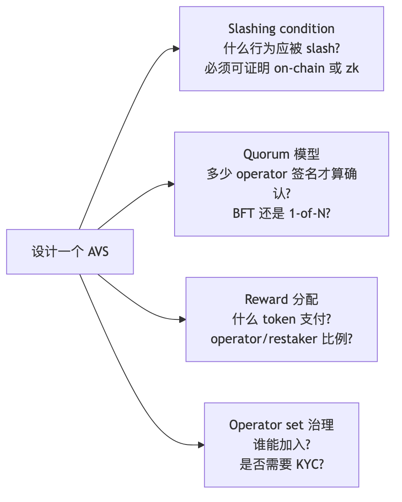
参考实现：EigenDA、Lagrange ZK Prover Network、Aligned Layer、AltLayer MACH 是当前最成熟的 AVS。
| 维度 | EigenLayer | Symbiotic | Karak |
|---|---|---|---|
| 主网时间 | 2024-04 | 2025-01-28 | 2024 |
| Slashing 主网 | 2025-04-17 | 上线即支持 | 待上线 |
| TVL（2026-04） | $15.3-19.5B | $1.7B+ | $102M |
| 抵押资产 | ETH/LST | 任何 ERC20 | LP/stable/WBTC/LST |
| AVS 数量 | 数十个 | 数个 | 数个 |
| 治理 token | EIGEN | SYMB（计划） | KSP |
选型参考：想 minimize 风险跟主流 → EigenLayer；想灵活组合自定义 collateral → Symbiotic；多元资产敞口 → Karak；BTC 持有者 → Babylon。
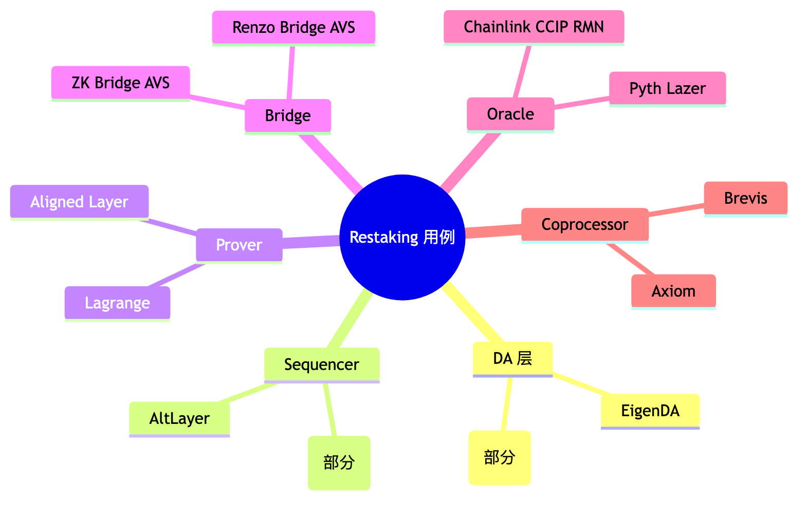
Vitalik 警告 restaking 三大风险：1) 过度复用 ETH 安全，AVS 集体出问题可能拖累 L1；2) LRT（ezETH、weETH）高度互嵌，单点失败传染；3) AVS 准入低，缺乏严格审计。真实事件：2024-04 Renzo ezETH 短暂脱锚至 $0.3，引发 LRT 市场恐慌。
L2 单笔交易费 = execution_gas × L2_gas_price + DA_cost + proof_cost_per_tx
execution_gas × L2_gas_price：L2 上跑合约的 gas（与 L1 EVM gas 几乎相同）DA_cost = (tx_calldata_size_bytes ÷ batch_size) × per_byte_DA_priceproof_cost_per_tx = proof_generation_cost_per_batch ÷ tx_count_per_batch（仅 ZK 系）输入参数：
计算：
| 组件 | 公式 | 数值 |
|---|---|---|
| execution | 150,000 × 0.001 × 1e-9 ETH | 1.5e-7 ETH ≈ $0.0005 |
| DA（4844 后） | 200 / 1,792,000 × blob_price | ~$2e-7（≈ 0） |
| proof（ZK 仅） | $0.0005–0.005 | $0.0005–0.005 |
| Optimistic 总计 | exec + DA | $0.0005–0.001 |
| ZK 总计 | exec + DA + proof | $0.001–0.006 |
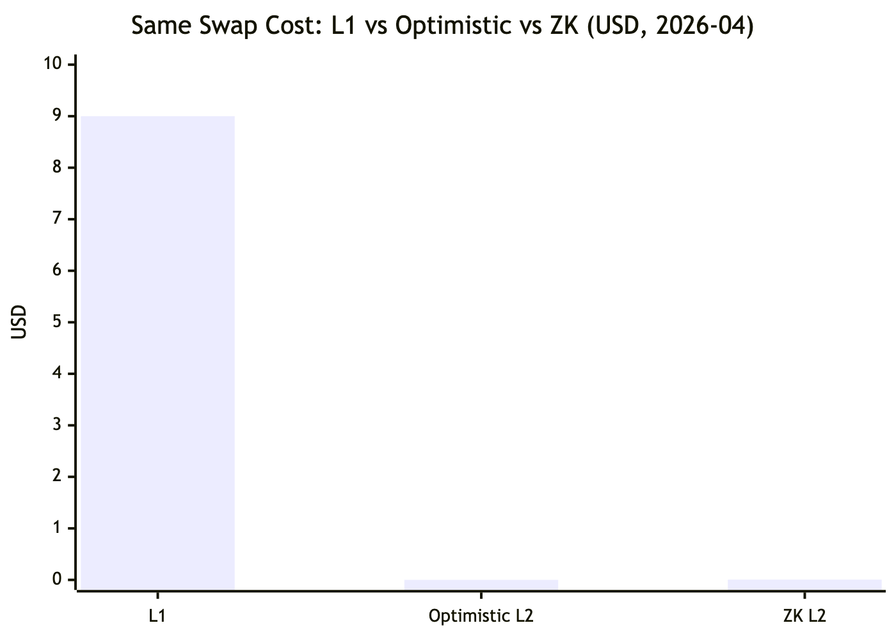
2026-04 现实：blob 几乎免费，rollup 成本中心已从 DA 转移到 execution + prover。优化 calldata 大小已不是 L2 工程师的首要目标；优化 prover 性能（ZK 系）和提升 sequencer infra 利用率才是。
假设：每天 100k 笔交易、平均 gas 100k、L2 gas price 0.001 gwei。
收入：
L2 gas 收入 = 100,000 × 100,000 × 0.001 gwei
= 1e10 gwei = 10 ETH/天
L2 priority fee + MEV ≈ 1–3 ETH/天
───────────────────────────────────────────────────
合计 ≈ 11–13 ETH/天
成本（Optimistic）：
L1 blob 提交（~50 个 blob/天） ≈ 0.01–0.1 ETH/天（PeerDAS 后接近 0）
L1 状态根 + system tx ≈ 0.3–0.8 ETH/天
Sequencer infra（云） ≈ $5k–$15k/月 ≈ 1–2 ETH/月
───────────────────────────────────────────────────
净利率（Optimistic，理论上限）：~85–95%
成本（ZK 系还要加）：
Prover GPU 集群 ≈ 2–5 ETH/天
───────────────────────────────────────────────────
净利率（ZK，理论上限）：~50–70%
注意：上方 85–95% / 50–70% 是只算 onchain L1 成本的乐观情景。Base / OP / Arbitrum 2024-2025 的公开财务数据显示，把 infra、token incentive、研发摊销、补贴退款、grant 计入后，实际净利率约 30–60%，2024 年 blob 价格波动期单月一度下探到 < 20%。
Coinbase（Base）、Consensys（Linea）、Sony（Soneium）、Kraken（Ink）、Uniswap（Unichain）争相自营 L2 的原因在此。去中心化 sequencer 上线后，这块利润将分散到 operator + 协议金库。
| DA 方案 | 100MB/天年成本（截至 2026-04） |
|---|---|
| Ethereum blob（PeerDAS 后） | $1–$50（接近 0） |
| EigenDA | ~$730 |
| Avail | $1500–3000 |
| Celestia | ~$12,775 |
| Ethereum calldata（pre-4844 等价） | ~$300,000+ |
数据来源：BlockEden 2026-02。
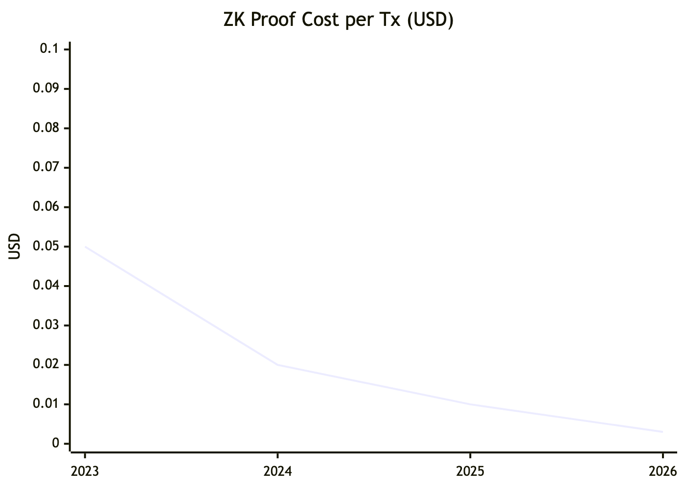
驱动力：更优电路（Plonky3、Halo2、custom gates）、GPU 升级（A100→H100→B200）、prover marketplace（Aligned Layer、Lagrange）、FPGA/ASIC（Cysic、Ingonyama）。
blob 几乎免费 → L2 数量爆炸（数百条）→ 每条 L2 用户少 → 流动性碎片化。解药：Superchain / AggLayer / Hyperchain 栈内统一流动性；共享 sequencer 跨 rollup 原子交易；CCIP / LayerZero v2 统一桥；Across / CowSwap 意图系统让用户不关心链。
Coinbase 公开数据：Base sequencer 月收入从 2023 初期 $100k 增长到 2025 高峰 $5M+；Pectra 后因交易量增长仍稳定在 $1–3M。品牌渠道获客 + 低费用 + sequencer 利润是当前最可持续的 L2 商业模型。
所有示例位于
code/（含 README）。本章给出每个 demo 的目标、原理图与关键代码片段。
位置：code/multichain-deploy/。用 Foundry 把 Counter.sol 部署到 5 条测试网（Sepolia / Base / OP / zkSync / Scroll Sepolia），自动产出 gas 对比表。
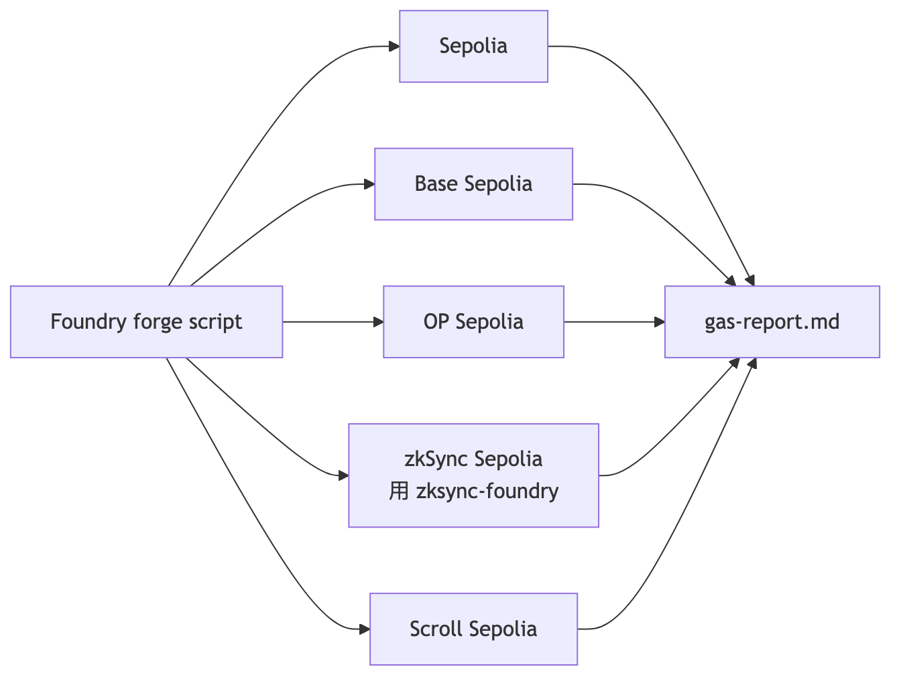
关键观察：L2 部署 gas 与 L1 几乎相同（EVM 等价）；zkSync gas 略高（EraVM pubdata 计费不同）；真实成本差距 1000×+——L2 不是「L1 打折」。
位置：code/op-bridge-message/。用 OP Stack L1CrossDomainMessenger / L2CrossDomainMessenger 跑 L1→L2 与 L2→L1 消息。
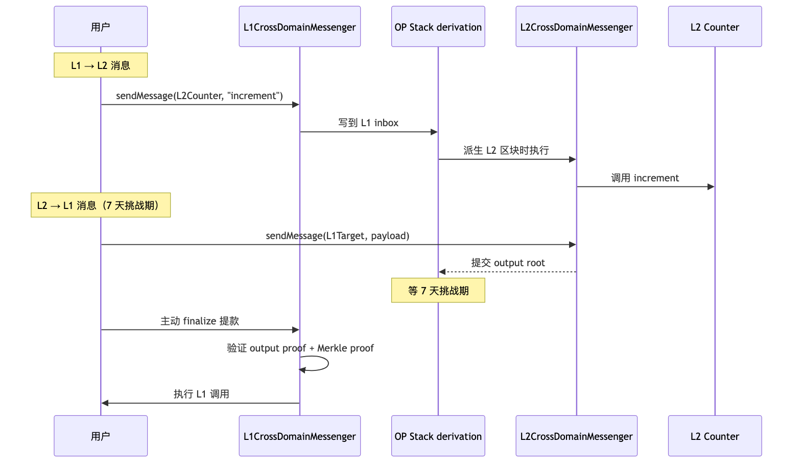
关键代码片段：
// L1 → L2
ICrossDomainMessenger l1Messenger = ICrossDomainMessenger(0x...);
l1Messenger.sendMessage(
l2CounterAddress,
abi.encodeWithSignature("increment()"),
100_000 // L2 gas limit
);
位置：code/hyperlane-warp-route/。Hyperlane CLI 部署跨 Sepolia ↔ Base Sepolia 的 ERC20。
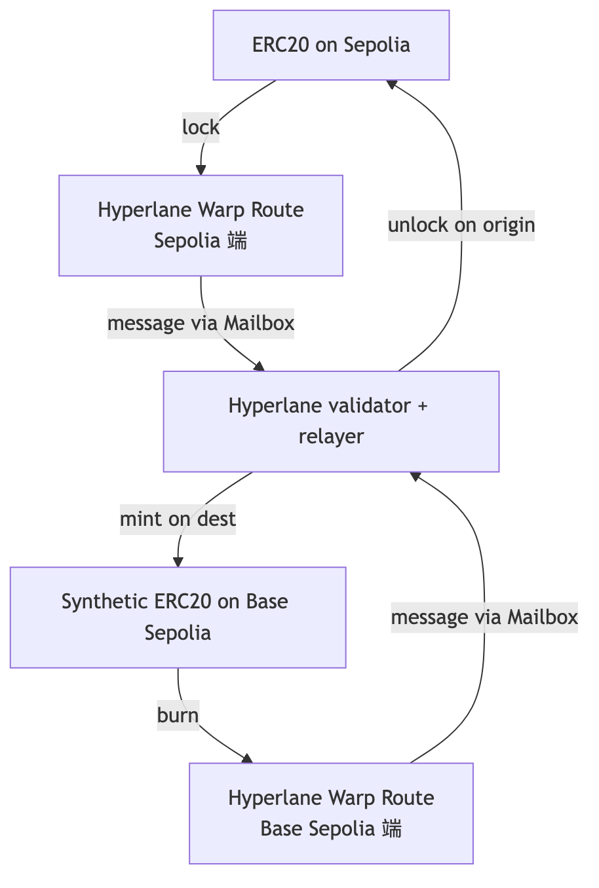
关键命令：
# 安装 CLI
npm install -g @hyperlane-xyz/cli
# 配置 warp route
hyperlane core init && hyperlane warp init
# 部署
hyperlane warp deploy --config warp-route-config.yaml
# 跨链发币
hyperlane warp send --from sepolia --to basesepolia --amount 100
位置：code/blob-watcher/。viem 订阅主网最新区块，过滤 type-3 blob tx，解析 KZG commitment。
import { createPublicClient, http } from 'viem';
import { mainnet } from 'viem/chains';
const client = createPublicClient({
chain: mainnet,
transport: http(process.env.MAINNET_RPC),
});
// 订阅新区块
client.watchBlocks({
onBlock: async (block) => {
const fullBlock = await client.getBlock({
blockNumber: block.number,
includeTransactions: true,
});
// 过滤 type-3 (0x03) blob tx
const blobTxs = fullBlock.transactions.filter(
(tx: any) => tx.type === 'eip4844' || tx.typeHex === '0x3'
);
for (const tx of blobTxs) {
console.log(`Blob TX: ${tx.hash}`);
console.log(` blobVersionedHashes:`, tx.blobVersionedHashes);
console.log(` maxFeePerBlobGas:`, tx.maxFeePerBlobGas);
// 哪些 rollup 提交的？看 to 地址
console.log(` to (rollup batcher inbox):`, tx.to);
}
},
});
完整代码含 batcher 地址映射表（识别 Base/OP/Arbitrum batcher）。
| 练习 | 目标 | 文件 |
|---|---|---|
| 1 | 计算同一笔交易在 L1/Optimistic/ZK 下的真实成本 | exercises/01-tx-cost-breakdown.md |
| 2 | 阅读一个 L2 的 stage 评级，找出 trust assumption | exercises/02-l2-stage-audit.md |
| 3 | 设计一条 app-rollup（OP Stack 或 Orbit）部署到测试环境 | exercises/03-app-rollup-design.md |
同一笔 Uniswap v3 swap（150k gas，calldata 400B 压缩后 200B）：
场景 1: L1
total = 150,000 gas × 20 gwei = 3e6 gwei = 0.003 ETH ≈ $9（按 ETH=$3000）
场景 2: Base (Optimistic)
execution = 150,000 × 0.001 gwei = 150 gwei = 1.5e-7 ETH ≈ $0.00045（按 ETH=$3000）
注意：实际 L2 gas price 通常 0.001-0.01 gwei
DA = 200 bytes × 1 wei (blob_base_fee) ≈ 几乎 0
total ≈ $0.0005-0.001
场景 3: Scroll (ZK)
execution = 同上 ≈ $0.0005
DA = 同上 ≈ 0
proof 摊销 ≈ $0.0005-0.005（看 prover 集群）
total ≈ $0.001-0.006
关键见解：L1 vs L2 差距 ~1000×；Optimistic 与 ZK 当前差距 ~3-10×（来自 prover 摊销）；数字只是数量级，具体看当时 gas price / blob price / prover 队列。
选一条 L2（推荐 Arbitrum / Linea / zkSync Era / Blast），用以下模板写完整 stage audit：
## L2 Stage Audit: <L2 名称>
### 1. 基本信息
- Stage（截至 2026-04）：
- 类型（Optimistic / ZK / Validium）：
- DA：
- TVL（来自 L2BEAT）：
### 2. Risk Rosette 五维
- State Validation：
- Data Availability：
- Exit Window：
- Sequencer Failure：
- Proposer Failure：
### 3. Permissions
- Security Council 人数：
- 多签门槛：
- 是否包含外部独立成员：
### 4. Contracts
- 升级 timelock：
- 紧急升级权：
- proxy admin：
### 5. 距离下一 Stage 还差什么
### 6. Trust Assumption 一句话总结
「相信 ___，相信 ___ 数学」
为虚构应用设计一条 L3，给出：栈选型（OP Stack / Orbit / ZK Stack）、DA 选型、sequencer（自营 / shared / RaaS）、跨链消息协议、一段安全模型总结。参考决策框架：
AI 做不了：协议设计（rollup 经济学、DAS 编码、新 EIP）、ZK 电路 under-constrained bug 检测（误报率高）、跨链消息形式化验证（仍依赖 Certora / K Framework 手工 spec）。L2 工程师的 AI 用法：监控 + 审计辅助 + 代码生成，不是让 LLM 设计 rollup。
L2BEAT 2025 年集成 ML 异常检测：sequencer batch 延迟超基线、proof 上链频率异常、TVL 异常波动（脱锚前兆）、升级提案前代币流动异常。类似工具：Chaos Labs Edge、Hypernative、Forta。
本模块写于 2026-04，所有 stage 评级、TVL、协议时间线均来自官方源（L2BEAT、各协议 docs、EF 公告）；事故复盘参考公开 post-mortem。具体数字请以 L2BEAT、growthepie、Dune、各协议 docs 实时数据为准。
下一模块：模块 08「零知识证明」——深挖 ZK 电路、SNARK/STARK 数学、Halo2/Plonky3/SP1。
| 维度 | Ethereum blob | Celestia | EigenDA | Avail | NEAR DA | 0G |
|---|---|---|---|---|---|---|
| 信任根 | Ethereum 共识 | TIA PoS | restaked ETH（DAC + KZG） | AVAIL PoS | NEAR PoS（分片） | 0G PoS + 自主 staking |
| 当前主网吞吐（2026-04） | 14 blob × 128KiB / 12s ≈ 150 KB/s（target） | 8 MB / 6s ≈ 1.33 MB/s（Q1 升级 128 MB） | 100 MB/s | 4 MB / block | 16 MB / 600ms shard | 2 GB/s storage 层（DA 层 50000× ETH） |
| DAS | 1D PeerDAS 已上 | Light node DAS | 不做 DAS（DAC） | KZG + DAS | shard data | 自有协议 |
| 数据保留 | ~18 天 | 永久（archival nodes） | DAC commit 即可 | ~17 天默认 | 长期 | 长期 |
| 100 MB / 天年成本 | $1–$50 | ~$12,775 | ~$730 | $1500–3000 | 中 | 接近 0 |
| 客户实例 | 全部主流 L2 | Manta、Eclipse | Mantle、Celo（部分）、若干 OP Stack | Polygon CDK 选项 | 实验性 | AI 链 |
| 与 Ethereum 安全对齐 | 等价 | 独立 PoS | restaking 间接 | 独立 PoS | 独立 PoS | 独立 PoS |
数据来源：BlockEden 2026-02 DA 战争、DA Layers 2026-03 对比。
Celestia 适合：Cosmos 生态原生（IBC 互通）；想要彻底独立于 Ethereum 经济；应用愿意接受 TIA 作为 DA gas token；主流案例：Manta Pacific、Eclipse、Movement、Lightlink。
EigenDA 适合：高吞吐要求（100 MB/s）；想要 ETH 安全对齐（restaking）；Mantle 是旗舰客户。
Avail 同时做 DA + light client validation + nexus 桥——它定位是「跨 rollup 的 DA + 互操作枢纽」。
DA 成本公式：
DA_cost_per_tx = (compressed_calldata_bytes / DA_capacity_bytes_per_unit) × DA_unit_price
其中：compressed_calldata_bytes 是 tx 经 brotli 压缩后的字节数（一般是原 calldata 的 30–60%）；DA_capacity_bytes_per_unit 是单个 DA 单元（blob / Celestia block / EigenDA chunk）的字节数；DA_unit_price 是单个 DA 单元的当前价格。
| DA | 单位 | 单位容量 | 单位价格 | 单笔（200B 压缩）成本 |
|---|---|---|---|---|
| Ethereum blob | 1 blob | 128 KiB | ~1 wei × 131072 ≈ 0 | ~0 |
| Celestia | 单 KB | 1 KB | ~0.001 TIA ≈ $0.0035 | $0.0007 |
| EigenDA | 单 chunk | 32 KB | ~$0.00006 | $0.00000037 |
| Avail | 单 KB | 1 KB | ~0.0001 AVAIL ≈ $0.0001 | $0.00002 |
2026-04 关键观察：blob 已经几乎免费，外部 DA 的成本优势严重削弱。如果你的 rollup 不是极致吞吐场景，直接用 Ethereum blob 通常是最佳决策。
| 事件 | 时间 | 损失 | 根因 |
|---|---|---|---|
| Harmony Horizon | 2022-06 | $100M | 2/5 多签被盗 |
| Qubit Bridge (BSC) | 2022-01 | $80M | 合约逻辑漏洞 |
| Meter | 2022-02 | $4.4M | 桥合约逻辑漏洞 |
| Poly Network | 2021-08 | $611M | 跨链调用权限漏洞（白帽返还） |
桥风险量化（截至 2026-04，Zealynx）：桥占 DeFi TVL < 10%；桥占被盗资金 > 50%；平均桥事故周期约 3 个月；多签桥比 light client 桥事故概率高约 10×。
收入 = L2_gas_revenue + priority_fee + MEV
L2_gas_revenue = Σ (gas_used × L2_base_fee)
priority_fee = Σ (gas_used × tip)
MEV = sequencer 内部 / private order flow / 共享 MEV 协议
成本 = L1_DA_cost + L1_settlement_cost + sequencer_infra + prover_cost (ZK only)
L1_DA_cost = blob_count × blob_base_fee × 131072
+ (calldata_bytes × calldata_gas_per_byte × L1_gas_price)
L1_settlement_cost = output_root_submission_gas × L1_gas_price
sequencer_infra = cloud / on-prem 月成本
prover_cost = GPU 集群 + 电费（仅 ZK）
代入数字、净利率上下限、blob 拥堵下的盈利分析见正文 17.4–17.8 与习题 D.1。
Sequencer 业务理论 70-90% 净利率（实际 30-60%），与一流 SaaS（Snowflake、Datadog 等 60-80%）相当甚至更高——这正是 Coinbase / Consensys / Sony / Kraken / Uniswap 都自营 L2 的根源。
题目：某 OP Stack rollup 日均 100k 交易，每笔压缩后 calldata 平均 200 字节。问：
答案：
日数据量 = 100k × 200 bytes = 20 MB
1. blob = 1 wei × 131072 gas = 0.000131 gwei
每个 blob 包 128 KB，需要 20 MB / 128 KB ≈ 156 blobs
日 DA 成本 = 156 × 0.000131 gwei ≈ 0.02 gwei ≈ 几乎 0
2. blob_base_fee = 1000 gwei，单 blob 数据费 = 1000 gwei × 131072 ≈ 1.31e8 gwei ≈ 0.131 ETH（极不切实际，但作为练习）
日 DA 成本 = 156 blobs × 0.131 ETH ≈ 20 ETH/天（严重）
实际操作：blob_base_fee 不会飙到 1000 gwei，PeerDAS 后供给充裕
3. 拥堵下 sequencer 仍盈利的关键：动态调整 L2 gas price 或 batch frequency。
题目：你为一款 MMO 链游设计 rollup，需求：
给出完整设计。
参考答案：
框架：OP Stack（生态成熟，RaaS 友好） + 自定义 gas token
DA：Celestia 或 EigenDA（链游低值高频，极致吞吐）
Sequencer：先用 Conduit 托管，达到 1M DAU 后自营
桥：CCIP 或 Wormhole NTT（不接受 7 天 → 用第三方桥即时提款）
Account：内嵌账户抽象（用户用邮箱注册）
特殊：游戏服务器作为 sequencer 一部分，预签名常见操作
经济模型：
日 tx = 10M
L2 gas price ≈ 0 gwei（gas-less，由游戏厂商赞助）
收入：来自 NFT mint fee、游戏内购、L1 提款手续费
成本：DA + sequencer infra + prover（如选 ZK）
注意：链游在 fraud proof 期间被攻击的影响有限，Validium 模式可考虑。
题目：以下「L2」中，哪些是真 rollup，哪些是 sidechain？
答案：
真 Ethereum L2（数据 + 结算到 ETH L1）：
- Arbitrum One（Optimistic Rollup）
- Base（Optimistic Rollup）
- Scroll（ZK Rollup）
- Linea（ZK Rollup）
不是 Ethereum L2：
- Polygon PoS：独立 PoS 侧链，不继承 ETH 安全
- opBNB：是 BSC 的 L2（数据到 BNB Chain），不到 ETH
- Gnosis Chain：独立 PoS 侧链
题目：用户有 1000 USDC 在 Base 上，想转到 Arbitrum One，目标：< 10 分钟、< $5 手续费。
给出 3 种方案对比。
参考答案：
方案 A：Native Bridge 路径
Base → L1（OP fault proof，7 天）
L1 → Arbitrum（即时但 gas 高）
时间：7 天+
成本：~$5（L1 gas）
❌ 时间不达标
方案 B：CCTP（Circle）
Base USDC burn → L1 mint → Arbitrum mint
时间：~15 分钟（取决 attestation）
成本：~$3-5
✅ 满足要求
方案 C：Across Protocol
Intent → 中继商前置垫付 → 1-2 分钟到账
时间：~1-2 分钟
成本：~$1-2 + 0.1% 服务费
✅ 最快最便宜（推荐）
最优：Across（速度+成本）
合规优先：CCTP（Circle 原生）
题目：L2BEAT 上某 L2 显示：
这条 L2 的风险特征是什么？给买家的警示？
参考答案：
风险特征：
- State Validation 橙：fraud/validity proof 系统未完全 permissionless 或正在过渡；
- DA 绿：用了 Ethereum blob 或同等安全 DA，无 DA 风险；
- Exit Window 红：用户提款窗口太短，紧急合约升级时可能困住资金；
- Sequencer Failure 黄：force-inclusion 已启用但延迟较长；
- Proposer Failure 橙：proposer 单点，宕机会卡住 state finalization。
给买家警示：
1. 不要把超过短期使用的资金放在该 L2 上；
2. 关注合约升级提案（Exit Window 红 = 升级到生效时间太短）；
3. 等到 State Validation 转绿（permissionless proof）再考虑大资金；
4. Proposer 单点意味着「对手能让链卡死」。
| 术语 | 含义 |
|---|---|
| Rollup | 执行在 L2，数据 + 结算在 L1 |
| Optimistic Rollup | 默认相信 sequencer，错了再罚 |
| ZK Rollup | 每笔批次附数学证明 |
| Validium | ZK 证明 + 链下 DA |
| Optimium | Optimistic + 链下 DA |
| Volition | 用户每笔交易自选 Rollup or Validium |
| DA | Data Availability，数据可用性 |
| DAC | Data Availability Committee，DA 委员会 |
| DAS | Data Availability Sampling，DA 采样 |
| KZG | Kate-Zaverucha-Goldberg 多项式承诺 |
| Blob | 4844 引入的 128 KiB 数据块 |
| BPO | Blob Parameter Only fork |
| PeerDAS | EIP-7594 的分布式 DA 采样 |
| Fraud Proof | 错误状态根的证据 |
| Validity Proof | 状态根正确的证据 |
| Sequencer | L2 出块者 |
| Proposer | 把状态根提交到 L1 的角色 |
| Force Inclusion | 用户绕过 sequencer 直接发交易到 L1 inbox |
| Stage 0/1/2 | L2BEAT 安全成熟度评级 |
| AVS | Actively Validated Service（EigenLayer 概念） |
| Re-staking | 把已质押 ETH 再质押给 AVS |
| L3 | Settle 到 L2 的 rollup |
| RaaS | Rollup-as-a-Service |
| Superchain | OP Stack 派生链联邦 |
| Orbit | Arbitrum 派生链生态 |
| Hyperchain | ZK Stack 派生链生态 |
| Type-1/2/3/4 zkEVM | EVM 等价度分级 |
| Based Sequencing | 用 L1 proposer 当 L2 sequencer |
| Shared Sequencer | 多个 rollup 共用一个 sequencer 网络 |
| OFT | LayerZero 的 Omnichain Fungible Token 标准 |
| NTT | Wormhole 的 Native Token Transfer |
| ISM | Hyperlane 的 Interchain Security Module |
| CCT | Chainlink 的 Cross-Chain Token |
| CCTP | Circle 的 Cross-Chain Transfer Protocol |
| IBC | Cosmos 的 Inter-Blockchain Communication |
本附录对正文未充分展开的若干主题做补全。所有数据均经 2026-04 二次搜索确认。
L2 圈 2025-2026 的一个高频问题：什么不算 L2？
| 项目 | 真实定位 | 关键证据 |
|---|---|---|
| Hyperliquid | L1（不是 L2） | HyperBFT 自己跑共识；HyperEVM (chainId 999) 是 L1 内的执行环境，与 HyperCore 共享 HyperBFT 但状态独立（CleanSky 2026、Zealynx 架构解读） |
| MegaETH | L2（real-time L2） | 2026-02-09 主网（Outlook India、Cointelegraph），目标 100k TPS、~10ms 区块时间，testnet 已达 47k TPS |
| dYdX v3 | 已退役的 ZK Rollup（StarkEx） | v4 是独立 Cosmos 应用链（v3 sunset） |
| Polygon PoS | 独立 PoS 侧链 | 不在 L2BEAT |
| opBNB | BSC 的 L2 | settle 到 BNB Smart Chain，不是 Ethereum L2 |
判断「是不是 Ethereum L2」的硬标准：执行结果 + 数据有无完整可被 Ethereum L1 验证的路径。Hyperliquid 没有；MegaETH 有；opBNB 走 BSC 共识所以不算。
MegaETH 与 Optimism 的差别：MegaETH 故意采用专业化 sequencer（不是去中心化目标），用「performance-first L2」定位差异化竞争。
AggLayer 是 Polygon 的跨链聚合层，2025-02 主网启动 pessimistic proof，目标是「让多条 chain 共享一个统一桥 + 统一流动性」。
悲观证明：每条接入 AggLayer 的链必须用 ZK 证明「我所有的 withdraw 累计 ≤ 我所有 deposit 累计」——一个会计 invariant。这就杜绝了一条恶意 / 被攻陷的 chain 通过桥提走「不属于它」的钱。实现：用 Plonky3 + SP1 zkVM 跑 Rust 写的 invariant 检查，主网 2025-02 上线（Polygon 公告）。
| 维度 | Polygon AggLayer | OP Superchain Interop |
|---|---|---|
| 跨栈兼容 | OP Stack + CDK + ZK Stack 多栈 | 仅 OP Stack |
| 安全模型 | 悲观证明 ZK + 各链自身 | OP cross-chain message + Stage 1 fault proof |
| 主网上线 | 2025-02（pessimistic proof live） | 2025 H2 上线，2026 持续完善 |
Superchain Interop 与「桥」的本质区别：interop 是同栈、同 Stage、同区块共识内的原子跨链调用，不是跨栈桥。
SuperchainERC20 是 OP Stack 给跨链 token 的 minimal extension，让任何 token 自动获得「在所有 Superchain 链上同地址、同语义、跨链可转」能力，不需要桥合约介入。
正文 3.3 / 3.4 已介绍机制，本节只补「为何选这条路」与「Stage 2 还差一道」。
| 维度 | Cannon (OP) | BoLD (Arbitrum) |
|---|---|---|
| 二分目标 | 一条 MIPS 指令 | 一条 WAVM 指令 |
| 选 ISA 原因 | Geth (Go) 编 MIPS 简单 | ArbOS 双轨 native + WAVM |
| 抵押 | 8 ETH（OP 设置） | 配置化 ETH |
| permissionless | 有限白名单 → 移除 | 完全无许可（先达成） |
| bounded delay | 7 天 | bounded（设计不无限延长） |
| 主网时间线 | 2024-06 OP Mainnet、2024-10 Base（+0.08 ETH 抵押） | 2024 Sepolia → 2025 Arbitrum One，2026-04 已稳定 1 年+ |
Stage 2 还差什么：Arbitrum 已最接近 Stage 2，但 Security Council 仍可 instant upgrade——这是最后一道未通过的硬门槛（L2BEAT Arbitrum）。OP 系也卡在同一道。
注意：「slashing 上线了」不等于「所有 AVS 都启用了 slashing」。EigenDA 截至 2026-04 仍处于 enabled but not enforced 状态——operator 风险仍以协议层 slashing 为主。
Avail Light Client 可以在手机和笔记本上跑，而不是要全节点存储。这让「轻钱包验证 DA」第一次成为现实。
Dymension 是 Celestia 上的 RollApp 平台——每个 dApp 是一条 Cosmos SDK rollup，settle 到 Dymension Hub、DA 到 Celestia。截至 2026-04 已有数十条 RollApp 上线，是 Celestia 生态最重要的飞轮。
Celestia 主网吞吐仍低于 Fusaka 后的 Ethereum blob target——「Celestia 比 ETH 便宜 50×」论调在 2026 已不再成立（Bitget DA Dawn 分析）。Celestia 现在的护城河是 Cosmos 生态对齐 + Dymension RollApp 飞轮。
两个 shared sequencer 项目（Astria、Espresso）的共同教训：技术不是唯一难题——「让客户 L2 放弃 sequencer 利润」是最大商业障碍。Espresso 靠先发优势 + 与 Arbitrum 紧密集成存活；Astria 失败。
核心问题：shared sequencer 把 L2 的「单实例垄断利润」拆给多方，L2 团队的预期净利率下降 10-20 个百分点。这就是为什么 Espresso 客户增长慢——L2 公司宁愿自己中心化、慢慢去中心化，也不愿马上让利。
正文 15.4 已列代表客户与栈支持。本节补付费模式与实测速度（BlockEden 23 分钟实测）：
| RaaS | 付费模式 | 实测部署时间 | 定位 |
|---|---|---|---|
| Conduit | 包月 $5k–$30k SLA + tx 抽成 | 23 分钟 | 自助 GUI，production-grade |
| Caldera | 白手套，全人工托管 | 销售对接 + 1-2 天 | 极致稳定，适合大客户 |
| Gelato | 自助 + 包月 | ~30 分钟 | 多栈最广（OP/ZK/CDK） |
| Alchemy Rollups | 与 Alchemy RPC 服务捆绑 | 与销售约 | OP Stack 单栈 |
Stylus 是 Arbitrum Nitro 的扩展（ArbOS 32+），让你用 Rust / C / C++ 写 WASM 合约，与 Solidity 合约完全互操作。
Stylus 适合：ZK 验证器（大整数、有限域算术）、链游服务器逻辑（性能敏感）、跨链 light client、AI agent on-chain inference（受限场景）。不适合纯 ERC20 / 简单 DeFi（Solidity 本来就够用）。
Stage 1 不能消除 sequencer 单点风险——Base 已 Stage 1，但 sequencer 仍是单一 cluster。Stage 1 解决「sequencer 作恶」不解决「sequencer 宕机」。force-inclusion 是兜底，但 12 小时延迟意味着普通用户体验仍受影响。
Chain Abstraction 的目标：用户感受不到链的存在——一个账户、一份余额、跨链原子操作。这是 L2 数量爆炸（数百条）后的必然解药。
2026 决策：给散户 dApp → 强烈推荐用 chain abstraction（Particle / OneBalance / Squid），用户不在乎链；给机构 / 合规 → 仍要清晰展示链与桥（合规要求）；自建 L2 → 把 chain abstraction SDK 默认接入是新标配。